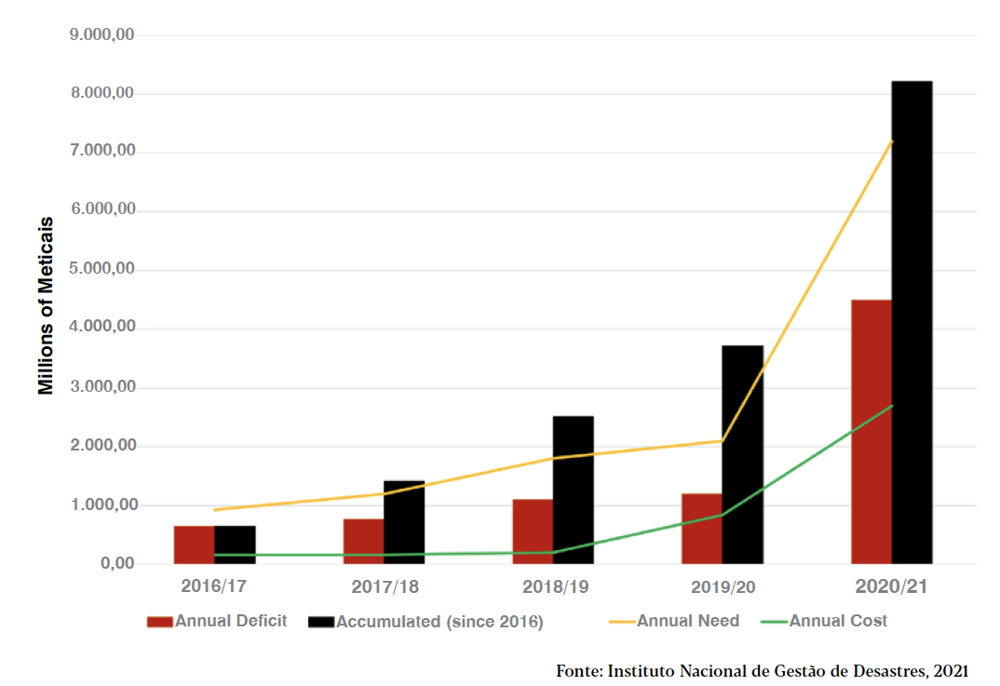
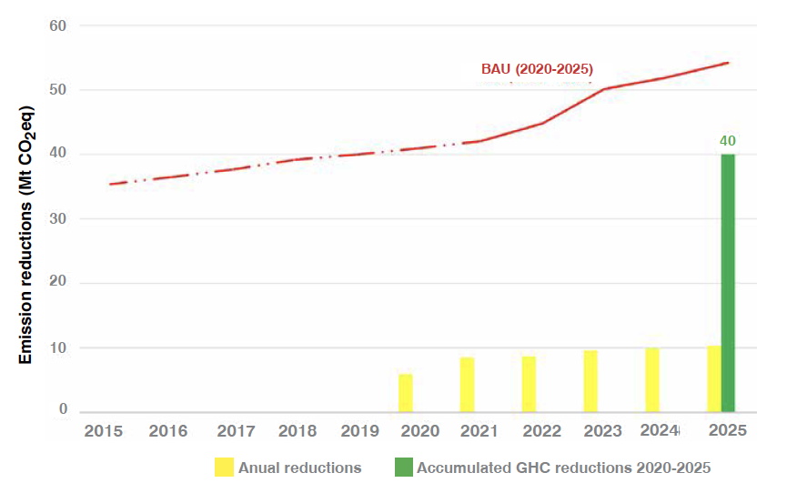
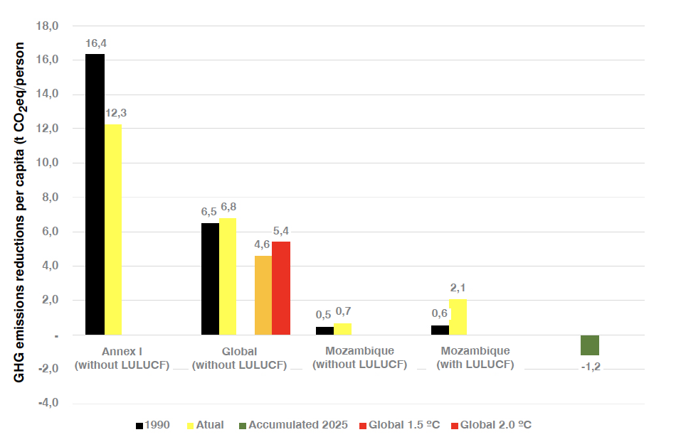
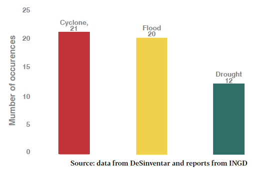
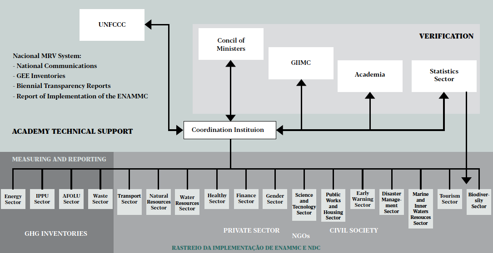

This document is made available by the National Directorate of Climate Change of the Ministry of Land and Environment of Mozambique
TRANSLATION AND EDITION
Caos Lda. and CEAGRE
FINANCIAMENTO
Climate Promise
REFERENCE
Government of Mozambique. Updated First National Determined Contribution of Mozambique
Climate Change Directorate.
Ministry of Land and the Environment
105 pp.
GRAPHIC DESIGN AND PAGINATION
Ana Paula Bouças
PHOTOGRAPHIC CREDITS
Inês de Sousa Mourão
SUBMITTED
by the Government of Mozambique on November the 1st 2021
AFOLU Agriculture, Forest and Other Land Use
AP Paris Agreement
ARA Regional Water Administration
BM Bank of Mozambique
BTR Biennial Transparency Report
BUR Biennial Update Report
CA Adaptation Communication
CBD Convention on Biological Diversity
CCGC Disaster Management Coordination Council
CGCMC Centre for Climate Change Knowledge Management
CH4 Methane
CN National Communication
CO2 Carbon dioxide
CO2eq Carbon dioxide equivalent
CONDES National Council for Sustainable Development
COP Conference of the Parties
CSE Higher Council of Statistics
CTCM Technical Council for Methodological Coordination
CTGC Disaster Management Technical Council
DA Activity data
DINAB National Directorate of Environment
DNMC National Directorate of Climate Change
EBAC Low Carbon Development Strategy
EDM Mozambique Electricity
ENAMMC National Climate Change Adaptation and Mitigation Strategy
ENH National Hydrocarbon Company
ETF Enhanced Transparency Framework
FAO United Nations Food and Agriculture Organization
FNDS National Sustainable Development Fund
FOLU Forest and Other Land Use
FREL Forest Reference Level
FUNAB National Environment Fund
FUNAE National Energy Fund
GEE Greenhouse Gases
Gg Gigagram
GIIMC Inter-Institutional Group for Climate Change
HCB Hidroeléctrica de Cahora Bassa, SA
ICAT Transparency Initiative for Climate Action
IGEE Greenhouse Gas Inventory
IIAM Institute of Agricultural Research of Mozambique
INAHINA National Institute of Hydrography and Navigation
INAM National Institute of Meteorology
INATTER National Institute of Land Transport
iNDC intended Nationally Determined Contribution
INE National Institute of Statistics
INGD National Institute of Disaster Management
INP National Petroleum Institute
IPCC Intergovernmental Panel on Climate Change
IPPU Industrial Processes and Product Use
kTOE Thousand tons of oil equivalent (equivalent to thousands of tons of oil)
LA Level Assessment
LDC Least Developed Countries
LEAP Long-range Energy Alternatives Planning System
M&A National Monitoring and Evaluation System
MADER Ministry of Agriculture and Rural Development
MEF Ministry of Economy and Finance
MGC Matola Gas Company
MICOA Ministry for Coordination of Environmental Action
MIREME Ministry of Mineral Resources and Energy
MISAU Ministry of Health
MIT Mitigation Scenario
MOPHRH Ministry of Public Works, Housing and Water Resources
MRV Measurement, Reporting and Verification
MTA Ministry of Land and Environment
MTC Ministry of Transport and Communication
MtCO2 Millions of tons of carbon dioxide
MW Mega Watts
N2O Nitrous oxide
NAMA Nationally Appropriate Mitigation Action
NDC Nationally Determined Contribution
ODS Sustainable Development Goal
PBUR Mozambique's First Biennial Update Report
PETROMOC Mozambique National Petroleum Company
POCA Agricultural Marketing Plan
PODA Agrarian Development Plan
PQG Government's Five-Year Plan
QNFTM National Strengthened Transparency Framework
REDD+ Reducing Emissions from Deforestation and forest Degradation
REF Reference scenario
RI-AAMMC Report on the Implementation of the Determined National Contribution
RI-ENAMMC Report on the Implementation of the National Strategy for Mitigation and Adaptation to Climate Change
RIN National Inventory Report
SEN National Statistical System
TA Trend Assessment
UEM Eduardo Mondlane University
UNEP United Nations Environment Programme
UNFCCC United Nations Framework Convention on Climate Change
MOZAMBIQUE submitted its Intended Nationally Determined Contribution (iNDC) to the UNFCCC on 1 October 2015 which became Mozambique's First Nationally Determined Contribution (NDC 1) 2020 - 2030 on 04 June 2018, the date on which the country became Party to the Paris Agreement.
This document presents Mozambique's NDC 1 Update, which was prepared following a participatory approach in which the public and private sectors including civil society and academia were also involved with technical assistance from various international partners. The process of updating NDC 1 took place in the context of the spread of COVID-19, combined with the climatic shocks that affected the south of the country at the beginning of 2021 and the military insecurity in some locations in the central and northern regions of the country, combined with weak global demand, led to a downward revision of the economic outlook initially outlined for 2021, with the growth rate falling from 2.1% to 1.5%.
In this way, reflecting the expected progress in vaccination and the extension of fiscal support in the major economies, with repercussions associated with the global economy and the maintenance of monetary policies, the global economy is expected to grow around 4.9% by the year 2022, and the Mozambican economy is expected to recover slightly, growing at a rate of 2.8% conditioned by the prices of the main commodities on the international market that may boost economic growth in the country. This scenario is based on continuing to respond to Public Health Emergencies as part of the response to the negative impact of COVID 19, with the implementation of the COVID-19 Response Plan through vaccination of 80% of the target population by 2022, providing health assistance to displaced populations and strengthening the Health Emergency Operational Centre.
Meanwhile, it should be noted that the State's economic planning points to the need to incur increased expenditure to deal with the adverse effects of the COVID-19 pandemic and climate events (costs beyond those foreseen in this NDC for adaptation). This will require increased external borrowing to fund investment projects linked to national development. Estimates based on current trends indicate that to meet these needs external credit should increase from 39,904.0 million ZZM in 2022 to 64,805.9 million ZZM in 20241.
Furthermore, it should be noted that Mozambique is a country that is already facing the adverse impacts of global climate change and in view of the great national socio-economic vulnerabilities, the losses and damages associated with extreme climate events are generating additional difficulties and challenges to the development of the country and the fight against extreme poverty. Since the latest data presented in NDC 1, the National Institute for Disaster Management (INGD) has conducted a preliminary analysis of the costs required for reconstruction following extreme climate events and other emergencies since 2016. The figure below graphically presents the annual and accumulated figures from 2016 to 2021 of the country's needs regarding the costs necessary for reconstruction after extreme climatic events linked only to the Rainy Season, considering the sectors of Education (classrooms), Health, Agriculture, Miscellaneous Infrastructure and Assistance, as well as the amounts allocated and the deficits identified during the period analysed. This analysis shows a growing financial deficit process related to the impacts linked to extreme climatic events and emergencies, which during the period under review has already reached over 8.2 billion meticais.
Figure 1 ANNUAL AND ACCUMULATED COST DEFICITS SINCE 2016 FOR RECONSTRUCTION

The commitment to actions to address global climate change is real, measurable and grounded in genuine national sovereignty, however, the large and growing barriers of finance, technology transfer and training & capacity building faced by Mozambique are undeniable.
Thus, Mozambique indicates that the implementation of the adaptation and emission reduction actions foreseen in NDC 1 are conditional to international climate support. The country received from the NDC Partnership support that made it possible to budget the proposed NDC actions and identify the commitments whose realization already had international climate support secured.
This document, as well as Mozambique's NDC 1, includes contributions on adaptation and mitigation, and identifies the financial, technological and capacity building barriers that the country has for its implementation. In terms of both adaptation and mitigation, this document has incorporated dozens of adaptation, mitigation and cross-cutting actions, measures, projects and policies that together would represent a total investment demand from 2020 to 2025 of around USD 7.586 billion. For comparison purposes, according to the World Bank, the country's nominal GDP in dollars in 2020 was about USD 14 billion2.
On one hand, regarding the specific contribution on adaptation, this update has considered several documents elaborated under the Convention and that have relevant information on vulnerability and adaptation measures, namely, the Mozambique National Strategy for Climate Change (ENAMMC), Technological Action Plan (for Adaptation covering agriculture and coastal zones and infrastructure and mitigation the energy and waste sectors), the Local Adaptation Plans (123 districts with local adaptation plans formulated by October 2021), the Second National Communication of Mozambique and other strategic documents including consultations with sectors and other relevant entities, the adaptation contribution is presented in this document.
In chapter 2 below, details on Contribution on Adaptation are presented, including specific sections on Vulnerabilities of Mozambique, Climate Scenarios, Adaptation & Resilience Measures, and Climate Risk Reduction. Among the main sectors that are included in the portfolio of adaptation actions, measures, projects and policies are: Early Warning System, Agriculture and Fisheries, Water Resources and Sanitation, Health, Biodiversity, Forestry, Social Security, Infrastructure, Urban Areas, Settlements and Tourism and Coastal Zones, Communication, Education, Capacity Building and Awareness, among other cross-cutting ones. It should be noted that in relation to the Health sector, the World Health Organization (WHO) is supporting the Ministry of Health (MISAU) and the National Institute of Health in strengthening the National Health System to the Impacts of Climate Change and in drafting the Plan for Adaptation of the Health Sector to Climate Change.
On the other hand, the contributions associated with the mitigation theme count on the implementation of actions, measures, projects, policies and programmes that contemplate the sectors of Agro-livestock and Sustainable Land Use, Waste Management, Energy Security and Sustainability of Industries. Mozambique is recognized as one of the countries that has been most dedicated to and developed national systems for scaling up emission reductions from deforestation and forest degradation and increasing carbon sinks (REDD+), as evidenced by the fact that it is one of the first countries to receive payment for results under the Forest Carbon initiative with the World Bank. Thus, for Mozambique REDD+ was included in this updated NDC 1 as a key means of implementation to operationalise mitigation ambitions.
Finally, Mozambique proposes to carry out a series of mitigation actions that in aggregate expect to achieve a reduction of GHG emissions by about 40 million tCO2eq between 2020 and 2025 (see graph below). These reductions are estimates with a significant level of uncertainty and will be updated with the results of the BUR to be available in 2022. It should be noted that, it was decided not to include as part of the mitigation contribution of this updated NDC 1 the removals and emissions from the commercial-scale tree planting (afforestation) component, due to the uncertainties of how such emissions and any emission reductions achieved by the activities of this component will be accounted for under the Paris Agreement.
In addition to the uncertainties already identified, we also highlight the lack of clarity on how the accounting rules used to comply with the NDCs will be, especially on the interpretations of how such rules will reflect on the scope of articles 5 and 6, especially on the implications linked to the cooperative approaches provided for in Articles 6.2 and 6.4, and possible accounting processes for the so-called "corresponding adjustments". Although they are not included, Mozambique clarifies that it reserves the right to reconsider their inclusion. The implementation of any proposed reduction is conditional on the provision of financial, technological and capacity building support from the international community. Finally, in chapter 3 below, information is presented to facilitate clarity, transparency and understanding (ICTU) of the mitigation contribution of this NDC 1 Update, following the requirements and guidelines set out in Decision 1/CP.21.
The emission reductions proposed in Mozambique's mitigation contribution would represent a mitigation effort of about 1.2 tCO2 eq per capita by 2025, a very relevant figure when compared to Mozambique's total GHG emissions per capita which were respectively 0.6 tCO2eq in 1990 and about 2 tCO2eq today (total emissions with LULUCF). Just for comparison purposes the per capita emissions of developed countries (listed in Annex I of the UNFCCC) in the base year (1990) and in 2019 were respectively 16 tCO2eq and 12 tCO2eq (total GHG emissions per capita without LULUCF). Globally these values are 6 tCO2eq and 7 tCO2 eq when accounting for total GHG emissions per capita with LULUCF. Figure 03 below, graphically presents such values presented above to facilitate visual comparison between emissions and emissions reductions per capita and comparison of what would be the approximate per capita emissions scenarios for mitigation routes to achieve temperature rise of up to 1.5°C and 2°C.
Figure 2 BAU, ANNUAL AND ACCUMULATED GHG EMISSION REDUCTION ESTIMATES 2020-2025

Figure 3 COMPARISON OF EMISSIONS PER CAPITA

This document is thus the result of the process of progression of ambition in various aspects such as adaptation, mitigation, transparency and international support. It is also reiterated that this updated NDC 1 document was prepared in an environment of uncertainty due to the measures imposed by the emergence of new waves of infections from COVID-19, natural disasters and military instability in some locations in the centre and north of the country. The country recorded a negative real growth of 1.2% in 2020, this reflects the negative effects of COVID-19 on economic activity during the second quarter, with the sectors that were most affected being hotel and restaurant services (-35.8%), extractive industries (-25.6%), trade (-5.7%), manufacturing(-5.3%), transport and communications (-4.7%).
In addition to the budgeting of mitigation and adaptation contributions contained in this document, we highlight the cooperation received under the NDC Partnership, which supported the mobilization and coordination given to the country aimed at updating this updated Mozambique NDC 1. It is important to highlight Mozambique's participation in the Initiative for Climate Action Transparency - ICAT that supported the development of the Strengthened Climate Transparency Framework. It is also reiterated that the existence of a robust response presented in this updated NDC 1 in terms of mitigation transparency is evident by contemplating the content of the ICTU table (presented in the next chapter).
Additionally, this update of NDC 1, also represents a significant progression in terms of expanding the country's ambition towards climate action in aspects of its adaptation commitments, comprising that dozens of actions will be implemented, among others, through the emerging Public Investment Management (PIM) Climate Smart PIM assessment system coordinated by the Ministry of Economy and Finance, supported by the World Bank and NDC Partnership. One of the technical outputs was the assessment of the public budget investments related to climate change already disbursed and proposed for the years 2020 to 20224. Such dynamics demonstrate that Mozambique is in a process of defining budget lines that aims to ensure that at least a small portion of the adaptation and mitigation actions and programs foreseen in this NDC are captured and already included in the State budgets. This dimension of mainstreaming climate change into the Public Investment Management Assessment system will contribute to the authorities adopting the guidelines including climate considerations aligned with the new law on the State Financial Administration System (SISTAFE).
These advances will contribute to increased fiscal and climate transparency, increasing the efficiency of public spending through the process of pre-assessment and approval of projects planned by the State of Mozambique before they are funded on social and economic impact, as well as, in particular, on vulnerability considerations and other aspects of global climate change.
This chapter describes the adaptation and risk reduction actions that the country commits to undertake in the period 2020 - 2025, aimed at making Mozambique more resilient to the impacts of climate change, reducing climate risks to people and goods as much as possible, restoring and ensuring the rational use and protection of natural and built capital (MICOA, 2012).
It should be noted that the strategic actions presented in the adaptation component of Mozambique's NDC are part of the adaptation and climate risk reduction pillar of the ENAMMC, which covers the following sectors and/or areas considered vulnerable to the impacts of climate change: climate risk reduction; water resources; agriculture, fisheries, food security and nutrition; social protection; health; biodiversity; forests; and, infrastructure, urban areas, other settlements and tourist and coastal zones.
The previous version of Mozambique NDC 2020-2030 analysed the extreme events that occurred in the country in the period 1980 to 2016 and indicated that floods, tropical cyclones, droughts including epidemics are the events that most affect the population, who live in prone areas. Floods are the most frequent event followed by tropical cyclones. This trend has changed a little in recent analyses covering the period 1980 - 2019, which show tropical cyclones as the most frequent event, followed by floods and followed by droughts (see graph below). This small change is influenced by the phenomenon that occurred during the 2018/2019 rainy season during which the country was affected by two tropical cyclones IDAI and Kenneth and tropical depression Desmond.
Figure 4 TOTAL NUMBER OF EXTREME EVENTS FROM 1980 – 2019

According to the previous figure, it can be concluded that on average, the country is affected by a tropical cyclone or flood event every two years and a drought event every three years. Tropical cyclone and flood events account for about 77% of the total events that occurred in the period under review. The direct impact of these events is often expressed by the number of human lives lost, people affected through loss of personal property and livelihoods, destruction of the country's critical infrastructure such as roads, bridges, water supply system, schools, hospitals, as well as the outbreak of water borne diseases (e.g. malaria, cholera, diarrhoea etc.). However, the lack of systematic and homogeneous recording of events and their impacts and, on the one hand, the persistence in considering only large-scale and high-impact disasters over a short period of time have hidden thousands of small and medium-scale disasters that occur every year in the country. Consequently, Mozambique does not know the real value of direct and/ or indirect economic losses associated with these events.
It is observed that the events that struck the country in the 2018/2019 rainy season are those that caused the most suffering in people's lives and those that recorded the most losses and destruction. For instance, the tropical cyclones IDA and Kenneth, which occurred in the 2018/2019 rainy season, these resulted in losses in livestock due to the death of 5,428 cattle, 10,305 small ruminants, 3,191 pigs and 124,498 poultry; in fisheries, 2,189 vessels were destroyed and 77 engines damaged, 2,387 fishing gear units lost and 5,210 tonnes of fish lost; in fish farming, 562 ponds and 228 cages totally destroyed and 396 tonnes of fish lost. Water supply and sanitation was affected by cyclone IDAI in 2019 and according to assessment by the expert team, 705 water supply boreholes and wells were destroyed affecting about 211,500 people, 47 water supply systems of cities and secondary towns were paralysed which created restriction in water supply to 1,639,244 people. Some 189,953 household latrines and septic tanks were submerged, forcing 416,047 people to return to open defecation with serious consequences for public health.
Regarding the agriculture, water and energy sectors, these were also affected by events during the rainy seasons from 2016/17 to 2019/2020. According to the table below, about 2,960 power poles, 95 water sources were destroyed and 1,529,389 ha of crops were affected.
On the other hand, more than 30 districts are prone to drought and the population living in these districts is deprived of water supply sources for human consumption, for the irrigation of small vegetable gardens and for watering livestock. The lack of access to potable water and the exposure and frequency of droughts on the one hand, and the existence of deep aquifers in the interior of the country with fresh or brackish water on the other hand, make it difficult to access safe water supplies and limit the development and well-being of families living in these regions. The country needs infrastructures to develop Water Supply, Sanitation and Hygiene Systems that are sustainable, safe and resilient to the risk of climate change, including the taking of measures aimed at protecting public health, preserving the water supply systems and, to this end, the country must develop Water Safety Plans, the exploration and development of deep aquifers as an alternative water supply in areas affected by drought and the construction of small water storage infrastructures for human consumption and irrigation, as well as the establishment of an optimum network for Water Resources Monitoring. It should be noted that the occurrence of extreme events has affected the environment and ecosystems, areas that are rarely evaluated for the damage caused.
In addition to the losses and damages registered with the occurrence of extreme events, the country has annually allocated resources that should fund socio-economic development activities for search, rescue, human assistance and reconstruction actions aimed at alleviating the suffering of the affected people. These actions are supported by national citizens, the private sector, civil society organisations and cooperation partners.
The support needs accumulate from event to event and year to year due to the frequency and intensity with which extreme events occur. Figure 01 (introduction chapter above) shows the amounts required for search and rescue, responding to the needs of the affected and post-disaster reconstruction, the amounts mobilised and the shortfall in the sectors of education, health, water supply, sanitation, various infrastructures and, mainly, for assistance to the affected.
Table 1 IMPACTS OF THE EXTREME WEATHER EVENTS DURING RAINY SEASONS FROM 2016 TO 2020 AT HUMAN LEVEL| Season | Event | Affected People | Affected Families | Injured | Deaths | Destroyed Houses | Flooded Houses | Worship Locations | Health Units | Destroyed Classrooms | Affected Schools | Affected Students | ||
| Partially | Totally | Partially | Totally | |||||||||||
|
2016-17 |
--- |
1,054,707 |
216,319 |
379 |
73 |
83,500 |
43,781 |
89,078 |
26 |
108 |
486 |
2,413 |
693 |
184,507 |
|
2017-18 |
Heavy rains and winds, strong winds, rains with lightning and gales |
152,246 |
31,146 |
51 |
61 |
14,461 |
7,313 |
9,099 |
44 |
18 |
463 |
201 |
42 |
10,088 |
|
2018-19 |
Drought, rain and strong winds, sometimes accompanied by lightning, and Desmond, Idai and Kenneth |
2,855,417 |
574,361 |
1,872 |
714 |
153,274 |
146,482 |
30,125 |
1,144 |
138 |
1,801 |
3,109 |
699 |
445,404 |
|
2019-20 |
Heavy rains, strong winds, lightning and floods |
195,449 |
40,892 |
68 |
57 |
11,864 |
6,221 |
44,809 |
89 |
8 |
--- |
--- |
--- |
--- |
| Total |
4,257,819 |
862,718 |
2,370 |
905 |
263,099 |
203,797 |
173,111 |
1,303 |
272 |
2,750 |
5,723 |
1,434 |
639,999 |
|
Source: reports on the rainy seasons from INGD
The vulnerability analysis done in the Second National Communication considered the climate projections developed by INGC "Studies on Climate Change Impacts on Disaster Risk in Mozambique Synthesis Report - Second Version" in 2009.
The methodology of the INGC study was based on climatological modelling (temperature and rainfall) with the main purpose of understanding how Mozambique's climate may already be changing and how it may be expected to change in the future. This study details the observed changes in the country's seasonal climate over the period 1960 to 2005, in terms of temperatures and rainfall patterns (INGC, 2009).
Both historical trends and future projections were derived from daily temperatures (maximum and minimum) and recorded rainfall values since 1960 from 32 synoptic weather stations within Mozambique (INGC, 2009).
Seven general circulation models: ECHAM, GFDL, IPSL, CCCMA, CNRM, CSIRO and GISS were used to project future climate (temperature and rainfall) scenarios for the country, focusing on the mid-century (2046-2065) and late-century (2080-2100) periods.
INGC (2009) projections anticipate that CC in Mozambique will manifest itself mainly in the following:
The atmosphere - with an average increase between 1.5°C and 3.0°C in the period between 2046 and 2065 and a record of more warm days and fewer cold days, with an increase in maximum and minimum temperatures;
The oceans - with a rise in average sea levels and a change in the distribution and availability of fish stocks and effects on marine ecosystems (such as corals);
With irregular rainfall behaviour in terms of starting and ending times, rainfall load (intense precipitation phenomena in a short space of time) and duration of the rainy season (drought), disfiguring the notions of "official start" and "real start" of the agricultural campaign, which may result in some regions in a reduction of current potential yields in the order of 25%;
With the growing reduction in potential agricultural yield levels of up to 20% in the main crops that constitute the basis for food security and an indispensable condition for improving the per capita income of Mozambican families;
Increased frequency and intensity of extreme events (droughts, floods and tropical cyclones);
Persistence of the extraordinary flood situation in identifiable places in the country that can be referred to as "risk areas";
Cyclones and other strong winds;
Prolonged droughts;
Sea level rise: 15 cm, 30 cm and 45 cm as a consequence of thermal expansion and 15 cm, 110 cm and 415 cm as a consequence of the reduction of the continental ice caps in the years 2030, 2060 and 2100, respectively;
Identified areas with increased risk potential due to the emergence of other adverse natural phenomena such as the loss by submergence and erosion of coastal areas, saline water intrusion and desertification;
Reduction of areas available for agriculture in green or low-lying areas;
Many of the country's main coastal urban centres, including Maputo, Beira and Quelimane, are already in a critical situation in terms of vulnerability (human lives, property, social infrastructure, etc.) to the effects of climate change.
Following is the summary table containing the strategic actions and respective measures that implemented will build climate resilience in communities and natural and built capital in the country.
| SISTEMA DE AVISO PRÉVIO | |
|
Strengthening the Early Warning System 4.6.1.1.1 |
Strengthening INAM's capacity to provide dedicated and adequate meteorological information to each user, including fisheries (development of products appropriate to the specific needs of meteorological information users) 4.6.1.1.1 |
|
Increasing the scale of the early warning system, reaching district 4.6.1.1.2 |
|
|
Strengthening of systems for storage, data processing and dissemination of timely meteorological and hydrological information (increasing accessibility and quality of meteorological and hydrological information) 4.6.1.1.1.3 |
|
|
Strengthening the role of INAM in coordinating the collection and monitoring of climate data (standardization of the method of collecting hydro-meteorological data under the tutelage of various intuitions/organizations, increasing the number of hydro-meteorological stations in the most vulnerable locations) |
|
|
Setting standards for the development and coordination of multi-event early warning systems (development and approval of an effective coordination mechanism between key SAP actors) |
|
|
Strengthening of the climate and meteorological information system to anticipate the occurrence of droughts (operationalisation of tools to monitor droughts and issue warning notices on the eminence of droughts) |
|
|
The dashboard for the INS National Health Observatory for climate sensitive diseases (Malaria, Dengue, Chikungunya, cholera and diarrhoea) (WHO) was developed. The pilot for integration of climate and epidemiological information and development of early warning system in 4 provinces (Nampula, Sofala, Inhambane and Maputo) is underway. |
|
|
Strengthening Climate Risk Preparedness and Response Capacity 4.6.1.1.2 |
Enhancing preparedness on impending climate disasters (Strengthening provincial and district bodies' capacity on disaster preparedness including response capacities) - 4.6.1.1.2.1 |
|
Strengthening the role of the INGC in coordinating response and recovery operations to climate disasters (Expansion of the coverage of Early Warning Systems of climatic phenomena to communities at higher risk; |
|
|
Ensuring an effective top-down and bottom-up communication system, Adopting a unified sustainable disaster recovery plan and operationalising tools for assessing the level of resilience at local level) - 4.6.1.1.2.2 |
|
|
Strengthening the coordinating role of the INGC and its partners in reducing vulnerability to drought in arid and semi-arid areas (ensuring a reliable flow of information on the eminence of drought and the dissemination of timely response measures to communities) - 4.6.1.1.2.3 |
|
|
Strengthening the role of the Multiple Use Resource Centres (CERUM) in supporting local communities 4.6.1.1.2.4 |
|
|
Increase and strengthen the capacity of CLGRCs and their equipment with preparedness kits (Promoting the establishment and capacity building of local disaster risk management committees and strengthening local communication capacity in the dissemination of warnings and alerts 4.6.1.1.2.5 |
|
|
Improved early warning dissemination system at local level (Strengthening the capacity and involvement of information and media outlets, including community radios, in the dissemination of early warning information and raising community awareness on climate change and disaster risk management issues) |
|
|
Strengthening the role of CLGRCs in climate risk reduction at local level (Drafting the terms of reference of CLGRCs, including actions for their sustainability; Strengthening their capacity and involvement in the flow of information alerting and sensitizing communities on matters of climate change and disasters; Promoting the exchange of experience among local communities on local knowledge of managing extreme events including actions undertaken to minimize their effects) |
|
| AGRICULTURE AND FISHERIES | |
|
Increasing the resilience of agriculture and livestock 4.6.1.3.1 |
Availability of appropriate technologies and inputs to climate change 4.6.1.3.1.2 |
|
Expansion of the electricity grid and improvement of power quality to enable agrarian enterprises and encourage investment in the six agricultural development corridors |
|
|
Transition to a resilient Blue Economy in the western Indian Ocean region |
|
|
Dissemination of improved technologies for agricultural production, agroforestry systems, natural resource management, conservation agriculture, irrigation, vaccinations, artificial insemination, reduction of post-harvest losses and processing of plant and animal products, and food and nutrition education - new |
|
|
Encouraging seed production and conservation: Implementation of the Action Plan for Seed Production and Conservation and Promotion of Low Cost Grain and Seed Storage Systems contained in the Adaptation Technology Action Plan for Agriculture. |
|
|
Increasing the resilience of fisheries 4.6.1.3.2 |
Regeneration of mangroves and implementation of protective measures for seaweed and seagrass, corals and other breeding and feeding areas for fish 4.6.1.3.2.2 |
|
Development of tools for the integration of adaptation into the planning and budgeting process in fisheries - new |
|
|
Development of low carbon agricultural practices 4.6.2.3.1 |
Promotion of conservation agriculture/climate-smart agriculture for fodder and food production 4.6.2.3.1.1: Implementation of the Conservation Agriculture Action Plan and the Rainwater Harvesting and Conservation Action Plan (Technological Adaptation Action Plan for Agriculture) |
|
Promotion of the use of integrated agroforestry systems to recover areas degraded by shifting cultivation 4.6.2.3.1.2 |
|
|
Promotion of use of methane from rice cultivation systems for energy production/ improved low emission rice production systems 4.6.2.3.1.2 |
|
|
Promotion of renewable energy use for irrigation/water pumping systems 4.6.2.3.1.3 |
|
|
Prevention of uncontrolled burning associated with shifting cultivation |
|
| WATER RESOURCES AND RESILIENT WATER SUPPLY AND SANITATION SYSTEMS | |
|
Increasing water r esources management capacity 4.6.1.2.1 |
Improving knowledge on the quality and quantity of water resources 4.6.1.2.1.3 |
|
Establishment of the Optimal Water Resources Monitoring Network |
|
|
Exploration/development of deep aquifers as alternatives for water supply in drought affected areas |
|
|
Increased access and capacity for water collection, storage, treatment and distribution 4.6.1.2.2 |
Increasing storage capacity at all levels 4.6.1.2.1.3 (Promoting construction of surface and sub-surface water storage infrastructure) |
|
PACA II - Community Adaptation Action Plans |
|
|
CUAPA III - Community Adaptation Action Plans |
|
|
Construction of multi-purpose water supply systems including desalination for arid and semi-arid areas using clean energy sources |
|
|
Promotion of the Water Safety Plans and Institutional Capacity Building of the main actors |
|
|
Development of Small Infrastructure for Water repression/storage |
|
|
Promoting more resilient rural sanitation solutions for floods |
Development of more appropriate infrastructure construction technologies for rural sanitation from the point of view of environmental protection and preservation |
|
Conservation of rainwater in excavated and underground reservoirs mainly in the South 4.6.1.2.4 |
Rainwater conservation in excavated and underground reservoirs mainly in the South (improvement of rainwater harvesting, conservation and management through capacity building and promotion of appropriate technologies) 4.6.1.2.4 |
|
Construction of agro-hydraulic infrastructure on major surface watercourses 4.6.1.2.6 |
Construction of agro-hydraulic infrastructure on the main surface watercourses and small dams which are easy to maintain for irrigation and animal watering (rehabilitation, construction and maintenance of dams and water reservoirs) 4.6.1.2.6 |
|
Promotion of low water consumption systems and waste reduction 4.6.1.2.1.8 |
Promotion of low water consumption systems and reduction of existing waste in the urban water distribution network (Adoption of lower water consumption irrigation technologies) 4.6.1.2.1.8 |
| HEALTH | |
|
Reducing people's vulnerability to climate change disease vectors 4.6.1.5.1 |
Strengthening the capacity to prevent and control the spread of vector-borne diseases by correctly mapping their distribution and spatial mobility 4.6.1.5.1.1 |
|
Conduct baseline study on diseases that are favoured by climate change 4.6.1.5.1.3 |
|
|
Establishment of a surveillance system and specific control measures on climate change diseases 4.6.1.5.1.4 |
|
|
Elaboration of the Health Sector Climate Change Adaptation Plan and finalization is expected by the end of November 2021. The elaboration of the H-Nap is based on the results and recommendation of the assessment of vulnerability and adaptation to climate change of the health sector in Mozambique conducted in 2019. The Plan is being developed with collaboration of MISAU, INS, Eduardo Mondlane University with technical and financial support from WHO through funds from the Government of Flanders. |
|
| BIODIVERSITY | |
|
Planning and management of biodiversity and coastal ecosystems 4.6.2.3. |
Rehabilitation of deforested areas for pasture creation, agriculture practice, forest resources exploitation 4.6.2.3.3.1 |
|
Ensuring the protection of biodiversity (4.6.1.6.1 |
Applying management practices that increase the adaptive capacity of ecosystems - 4.6.1.6.1.5; (linked to the national biodiversity strategy, target 10: By 2035, place at least 20% of ecosystems critically affected by climate change under adaptive ecosystem management) |
|
Identification and replication of lessons and good practices on mitigation and adaptation (Target 10.3 of the National Biodiversity Strategy) |
|
|
Establishment of cross-border conservation areas to maintain ecosystem functions and allow wildlife migrations - 4.6.1.6.1.3 |
|
|
Reclassification and re-dimensioning of conservation areas, identifying areas at risk of biodiversity loss |
|
|
Promotion of the survey of knowledge on the contribution of biodiversity to the increase in the carbon stock, with a view to mitigating and adapting to climate change (based on Target 15 of the National Biodiversity Strategy) |
|
| FORESTS | |
|
Reducing the rate of deforestation and uncontrolled burning 4.6.2.3.2 |
Establishment and increased adoption of integrated agroforestry systems (agro-silvo-pastoral); use of multiple-use forest species: shade/nitrogen fixing/forage (REDD+, MozBIO, FIP, Sustenta, Payment for Carbon Credits in Zambezia) - new |
|
Rehabilitation of degraded ecosystems and grasslands through landscape rehabilitation (REDD+, MozFIP) - new |
|
| SOCIAL SECURITY | |
|
Increasing the adaptive capacity of vulnerable people 4.6.1.4.1 |
Develop and implement approaches for community-based adaptation through Local Adaptation Plans 4.6.1.4.1.1 |
|
Strengthening basic social protection MEASURES in relation to climate change so that it contributes to the resilience of vulnerable populations 4.6.1.4.1.2 |
|
|
Strengthening the capacity for targeting and orientation of the Productive Social Action programme to increase the resilience of vulnerable groups 4.6.1.4.1.3 |
|
|
Strengthening links between the social protection system and the natural disaster response system, including linkage with early warning systems 4.6.1.4.1.4 |
|
| INFRASTRUCTURE, URBAN AREAS, SETTLEMENTS AND TOURIST AND COASTAL ZONES | |
|
Developing resilience mechanisms for urban areas and other settlements 4.6.1.8.1 |
Drafting and updating climate-robust planning and spatial planning instruments and strengthening their implementation 4.6.1.8.1.1 |
|
Mapping of vulnerable infrastructure or infrastructure at risk according to the type of climatic phenomenon (floods, cyclones, sea level rise) 4.6.1.8.1.2 |
|
|
Reformulation of building codes for transport, telecommunications, energy distribution, buildings, water and wastewater treatment infrastructures to make them climate resilient 4.6.1.8.1.3 |
|
|
Ensuring that investments, particularly public, in risk areas are climate-proofed 4.6.1.8.1.4 |
|
|
Promoting the design and implementation of potential climate risk insurance mechanisms in the built heritage 4.6.1.8.1.5 |
|
|
Strengthening the resilience of the cities of Quelimane and Nacala in relation to flood and erosion control 4.6.1.8.1.6 |
|
|
Mapping of regions prone to soil erosion and landslides 4.6.1.8.1.7 |
|
|
Drawing up projects for the construction of water supply infrastructures taking into account the occurrence of the main natural phenomena 4.6.1.8.1.8 |
|
|
Adoption of resilient measures to natural hazards during the implementation of water supply infrastructures (abstraction, storage, transport and distribution) 4.6.1.8.1.9 |
|
|
Suitability of tourist areas and coastal zones development to reduce climate change impacts 4.6.1.8.2 |
Assessment of the main climatic risks for resources and areas of interest to tourism 4.6.1.8.2.1 |
|
Advising operators on appropriate building codes 4.6.1.8.2.2 |
|
|
Promoting good practices among operators and tourists, through public-private partnerships, aimed at the resilience of the sector and the conservation of ecosystems 4.6.1.8.2.3 |
|
|
Development of conservation and coastal protection practices 4.6.1.8.2.4 |
|
|
Promoting the adoption of climate insurance for tourism activities and infrastructures 4.6.1.8.2.5 |
|
|
Implementation of the Technological Action Plan and Project Ideas for Coastal Zone and Infrastructure |
|
| COMMUNICATION, EDUCATION, TRAINING AND AWARENESS-RAISING (TRANSVERSAL ACTIONS) | |
|
Implementation of the communication and awareness raising plan for climate change adaptation and mitigation |
|
|
Mainstreaming climate change issues and curriculum development in school curricula from grade 1 to 11 |
|
|
Formulation and implementation of a technical-institutional capacity-building plan for NDC implementation under the Capacity Building Initiative for Transparency (CBIT) of the Paris Agreement |
|
|
Promoting studies and research on climate change aimed at reducing climate risk and potential for low-carbon development |
|
|
Mainstreaming climate change issues and programmatic content development at the technical staff training institute |
|
|
Establishment of infrastructure and human resources to support laboratories dedicated to research, monitoring and verification of climate change adaptation and mitigation projects |
|
|
Maintenance and feeding of the NDC transparency portalDC |
|
|
Institutionalising the GIIMC, the CGCMC and the Climate Change Network and strengthening them with a view to their sustainability |
|
|
National Climate Change Conference to be held every two years |
|
|
Development of at least 2 national emission factors to achieve the use of TIER 2 in priority sectors (e.g. energy and waste) |
|
|
Updating climate scenarios and downscaling the results to cover the Mozambican territory |
|
| 1. QUANTIFIABLE INFORMATION ON THE REFERENCE POINT (WITH INDICATION, IF APPLICABLE, OF A BASE YEAR): | ||||||||||||||||||||||||||||||||||||||||||||||||||||||||
|
a) Reference years, base years, reference periods or other starting points; |
It is understood that there is no base year and that the results will be compared with the BAU emissions scenarios of the implemented measures, considering two years to reach the target one from 2020 to 2025, made based on the last GHG Inventory provided in PBURM. |
|||||||||||||||||||||||||||||||||||||||||||||||||||||||
|
b) Quantifiable information on the benchmarks, their values in the corresponding reference years, base years, reference periods or other starting points and, as the case may be, in the reference year; |
Mozambique developed the BAU scenario based on the sum of mitigation actions for the period 2020 to 2025, proposing expectations for annual emission reductions. In the year 2016, total emissions without LULUCF were estimated at about 35 MtCO eq 2and, using data and methodologies appropriate to national circumstances, estimates of projections of each mitigation action and the 2006 IPCC Guidelines for National Greenhouse Gas Inventories, it is projected that in 2025, if the policy actions and programmes presented in this NDC are not implemented, emissions in 2025 will be about 54 MtCO2eq without LULUCF. Based on assumptions of economic and population growth and, it is expected that the country can cumulatively mitigate about 40 MtCO eq 2in the period 2020 - 2025. The contributions associated with the theme of mitigation count on the implementation of actions, measures, projects, policies and programmes, which include the sectors of Agro-livestock and Sustainable Land Use, Waste Management, Energy Security and Sustainability of Industries. Mozambique is recognized as one of the countries that has been most dedicated to and developed national systems for scaling up emission reductions from deforestation and forest degradation and increasing carbon sinks (REDD+), as evidenced by the fact that it is one of the first countries to receive payment for results under the Forest Carbon initiative with the World Bank. Thus, for Mozambique REDD+ was included in this updated NDC 1 as a key means of implementation to operationalise mitigation ambitions. Finally, Mozambique proposes to carry out a series of mitigation actions that in aggregate expect to achieve a reduction of GHG emissions by about 40 million tCO2 eq between 2020 and 2025. These reductions are estimates with a significant level of uncertainty and will be updated with the results of the BUR to be available in 2022. It should be noted that, it was decided not to include as part of the mitigation contribution of this updated NDC 1 the removals and emissions from the commercial-scale tree planting (afforestation) component, due to the uncertainties of how such emissions and any emission reductions achieved by the activities of this component will be accounted for under the Paris Agreement. |
|||||||||||||||||||||||||||||||||||||||||||||||||||||||
|
c) In the case of strategies, plans and measures referred to in Article 4, paragraph 6 of the Paris Agreement5 or policies and measures incorporating nationally determined contributions where paragraph 1(b) above is not applicable, Parties shall provide other relevant information; |
Mozambique reserves the right to apply this paragraph in the future, including to adjust the information contained in item 1b) above. |
|||||||||||||||||||||||||||||||||||||||||||||||||||||||
|
d) Target in relation to the baseline indicator, expressed numerically, for example as a percentage or quantity of reduction; |
With the implementation of the identified actions, measures, projects, policies and programmes, Mozambique expects to reduce its GHG emissions by about 40 Mt CO2eq between 2020 and 2025. The indicators are the tons of CO2eq reduced following the baseline parameters and mitigation actions calculated by measures and accounted in annual results, which will be aggregated and compared to the quantities committed in 2025. |
|||||||||||||||||||||||||||||||||||||||||||||||||||||||
|
e) Information on the data sources used to quantify the benchmarks; |
|
|||||||||||||||||||||||||||||||||||||||||||||||||||||||
|
f) Information on the circumstances in which the Party may update the benchmarksa) |
The BAU scenario values may be adjusted in the future, considering possible improvements in GHG emissions calculations covering sectors and gases, and evolutions in inventory techniques, as well as different national circumstances and methods of defining baselines for actions included as part of the NDC. |
|||||||||||||||||||||||||||||||||||||||||||||||||||||||
| 2. DEADLINES AND / OR PERIODS OF APPLICATION: | ||||||||||||||||||||||||||||||||||||||||||||||||||||||||
|
(a) Timeframe and/or period of implementation, including start and end dates, in accordance with any other relevant decision adopted by the Conference of the Parties serving as the meeting of the Parties to the Paris Agreement (CMA); |
The reference period for operationalization is from 2020 to 2025, so the mitigation results should be achieved by the year 2025. |
|||||||||||||||||||||||||||||||||||||||||||||||||||||||
|
b) Whether it is a one-year target or a multi-year target, as appropriate. |
Cumulative targets considering annual reductions but accounted for a single year in 2025. As indicated in 2a) above, they imply comparisons between the emissions of the proposed mitigation actions and the emissions of the BAU scenarios of the specific actions. |
|||||||||||||||||||||||||||||||||||||||||||||||||||||||
| 3. SCOPE AND COVERAGE: | ||||||||||||||||||||||||||||||||||||||||||||||||||||||||
|
(a) General description of the target; |
The emission reduction target presented by Mozambique is divided into cumulative annual efforts between the years 2020 and 2025, whereby the country commits to reduce its emissions by about 40 MtCO2eq between 2020 and 2025. The country expects to reduce these emissions in comparison to the BAU of the specific actions and, should Mozambique benefit from international climate finance, the total investment required to generate these reductions and the other actions foreseen in this updated NDC 1 is estimated to be around USD 7.586 billion (from 2020 to 2025). |
|||||||||||||||||||||||||||||||||||||||||||||||||||||||
|
(b) Sectors, gases, categories and sinks covered by the nationally determined contribution, including, as applicable, consistency with Intergovernmental Panel on Climate Change (IPCC) guidelines; |
Sectors: The scope of the contribution covers the sectors of the national economy relevant for GHG emissions in the actions listed in item 1b above. Gases: CO2, CH4, N2O |
|||||||||||||||||||||||||||||||||||||||||||||||||||||||
|
(c) How the Party has taken into account paragraph 31 (c) and (d)8 of decision 1 / CP.21; (indicating how the Party is striving to include all sources and sinks and why all categories were excluded) |
The sectors covered are those that cover the mitigation actions listed in item 1.b. |
|||||||||||||||||||||||||||||||||||||||||||||||||||||||
|
(d) Mitigation co-benefits resulting from Parties' adaptation action and/or economic diversification plans, including the description of specific projects, measures and initiatives of Parties' adaptation action and/or economic diversification plans. |
Mozambique has not yet conducted mitigation co-benefit assessments for economic diversification plans. |
|||||||||||||||||||||||||||||||||||||||||||||||||||||||
| 4. PLANNING PROCESSES: | ||||||||||||||||||||||||||||||||||||||||||||||||||||||||
|
(a) Information on the planning processes the Party has undertaken to prepare its nationally determined contribution and, if available, on the Party's implementation plans, including, as appropriate: |
AFollowing the ratification of the Paris Agreement by Parliament in 2017, the then Ministry of Land, Environment and Rural Development submitted to Camões Institute for Cooperation and Language of Portugal the project "Roadmap for the Implementation of Mozambique's Nationally Determined Contribution - NDCMoz "with the aim of designing the roadmap for the implementation of Mozambique's NDC, contributing to the implementation and success of the Paris Agreement, through a country with a low carbon and resilient development and to the pursuit of the Sustainable Development Goals (SDGs). In parallel, the country benefited from the World Bank and NDC Partnership initiative through which it intended to support the Government to prioritize the operationalization of Mozambique's NDC targets in the sectors of: agriculture, energy, water, transport and early warning system, aligning them with government policies and priorities. These two initiatives were harmonised to cover all sectors of the Mozambique NDC 2020 - 2030, and enabled a broad consultation process with stakeholders, including business sectors, provinces and civil society representatives to prioritise the actions to be included in the NDC and the format in which they should be presented. The implementation of these two initiatives resulted in the formulation of the Mozambique NDC 2020 - 2025, the Mozambique NDC Operationalisation Plan 2020 - 2025, which details the actions of the NDC. On the other hand, Mozambique has benefited from the support of the NDC Partnership which has resulted in the formulation of the NDC Partnership Plan that identifies both the project and capacity building needs for the implementation of NDC. These documents were approved by the Council of Ministers at its 38th Session, held on 11 December 2018. However, some actions of the Mozambique NDC 2020 -2025 and the respective Mozambique NDC Operationalization Plan 2020 - 2025 lacked relevant information for the process of measuring/monitoring, reporting and verifying both the actions and the support. On the other hand, there was a need to have updated inventories, as the estimated contributions in NDC 1 were based on the National Greenhouse Gas Inventory Report 1995 - 2004. It is in this context that Mozambique has submitted in the two calls made by the NDC Partnership - Climate Action Enhancement Package (CAEP I and II), requests for assistance to adjust its NDC to the Transparency Modalities, Procedures and Guidelines. Under this support it was possible, amongst other results, to update the NDC budget and identify actions whose implementation is conditioned to international climate support and those that are not conditioned; formulate project ideas for priority actions conditioned to international climate support; formulate Mozambique's Long Term Low Carbon Development Strategy 2020 - 2050; update energy sector statistics; integrate NDC into planning and budgeting processes; detail NDC actions; formulate National Adaptation Plan for the Health Sector; develop Local Adaptation Plans; strengthen gender sensitivity in Mozambique's NDC actions; and, design terms of reference for developing emissions factors for the energy and waste sectors. Other initiatives that contributed to the improvement of Mozambique's NDC are: (i) the Initiative for Transparency in Climate Action - ICAT which supported in the formulation of the Strengthened Framework for Transparency including capacity building of technicians; and, the project to formulate the First Biennial Mozambique Transparency Report (PBTRM). |
|||||||||||||||||||||||||||||||||||||||||||||||||||||||
|
(i) Domestic institutional arrangements, public participation and engagement with local communities and indigenous peoples in a gender sensitive manner; |
Since the approval of the ENAMMC, the Government has been strengthening the institutional framework in order to improve the coordination and implementation of climate change actions including the reporting process established in the UNFCCC. It is in this context that in 2020, the Ministry of Land and Environment was created, with the following competencies, in the area of climate change, relevant to the implementation of the NDC:
These competences are attached to the National Directorate of Climate Change which has in its structure the departments of adaptation and mitigation in the Ministry of Land and Environment. Considering the cross-cutting nature of climate change and the need for the involvement of state and non-state actors in both the formulation of national climate change response instruments and their implementation, including biennial reporting and review commitments, monitoring to support the production of national communication and regular updating of the NDC, the Inter-Institutional Group on Climate Change was established, composed of representatives from the public and private sectors and civil society relevant to the implementation of adaptation and climate risk reduction and mitigation and low carbon development actions including cross-cutting actions (capacity building, technology development and transfer, financing, awareness raising education, etc.). The members of the GIIMC have the responsibility to:
It is important to mention that for the elaboration of Local Adaptation Plans, multi-sectoral teams have been created at provincial and district level that support local communities in the process of assessing their vulnerability and identifying and prioritising adaptation measures including the identification of potential local development partners. On the other hand, the Ministry of Land and Environment has established the holding of a National Climate Change Conference every two years as a forum open to public participation to, among others, share information, experiences and good practices in the area of climate change; promote education and public awareness on issues related to climate change; and, promote the dissemination and discussion of issues relevant to climate change. The First National Conference took place this year with the participation of actors from central, provincial and district levels and the second Conference will take place in 2023, the year in which the country will be preparing its First Biennial Transparency Report. |
|||||||||||||||||||||||||||||||||||||||||||||||||||||||
|
(ii) Contextual issues, including, inter alia, as appropriate: a) National circumstances, such as geography, climate, economy, sustainable development and poverty eradication; b) Best practices and experience related to the preparation of the nationally determined contribution; c) Other contextual aspirations and priorities recognised when joining the Paris Agreement |
The Republic of Mozambique is a country located in the southern hemisphere, on the southeast coast of the African continent. It has an area of 801,590 km²2 of land and about 13,000 km² of internal waters. The eastern part of the country is bathed by the Indian Ocean and has a coastline of approximately 2,700 km². Administratively, the country is divided into 11 Provinces. The provinces are currently divided into 154 districts which, in turn, are subdivided into 419 local administrative districts called Postos Administrativos. In addition to these subdivisions, there are 53 municipal autarquias, located in the main cities and towns throughout the country. Along the coast there are numerous islands, such as the archipelago of Quirimbas in the province of Cabo Delgado, the Island of Mozambique and the islands Goa and Sena in the province of Nampula, the archipelago of Bazaruto in Inhambane, the islands of Inhaca, Portugueses and Xefina in the province of Maputo. Data from the Anuário Estatístico 2015, estimates that Mozambique had about 25.7 million inhabitants, with about 52% being women and 48% men. According to the results of the last population census conducted by the National Institute of Statistics in 2017 indicate that the Mozambican population was 27.9 million, and the percentage of women and men remained the same. INE population projections indicate that by 2025 Mozambique will have about 34.1 million inhabitants, thus projecting a net population expansion of over 6 million inhabitants. With regard to the distribution of the population by age group (table below), particularly between 2017 and 2025, there is a decrease in the population aged between zero and 14 years old; a growth throughout the period in the population aged 15 - 64 years old as well as a growth in the population aged 65 years old and over.
The average life expectancy is 54 years, being 51 years for men and 56.5 years for women. Portuguese is the official language of the country, however, there are more than 40 languages spoken throughout the national territory. Agriculture is the mainstay of the Mozambican economy, employing more than 80% of the country's economically active population (PEDSA, 2011). Furthermore, it is the sector with the highest average share in GDP, with more than 20% of the total. Manufacturing is the second sector with the highest contribution to GDP (13%), followed by trade and transport and communications services with an average of 10% each. The national economy has considerable potential in the primary sector due to the existence of various natural resources capable of serving as a basis for creating a competitive advantage in various productive sectors. For example, ICF International (2012) and Biggs (2012) have documented that Mozambique has one of the world's largest reserves of natural gas (estimated at 250 trillion cubic feet) and coal (estimated at 25 billion tons). Other natural resources include forests, grasslands, inland waters, 2,400 kilometres of coastline and minerals (FAO, 2006). The main challenge is the development of industries that enable their sustainable exploitation and transformation. Diversification of the national economy is another challenge for more stable, comprehensive and sustainable growth. After several years of growth of around 7%, the national economy experienced a slowdown in 2016, growing by only 3.8%, down from 6.6% and 7.4% in 2015 and 2014, respectively. This decline was mainly due to the drought registered in the central and southern areas of the country, and the floods in the central and northern regions, having negatively affected the agriculture sector and electricity production, among other international and national conjunctural factors. The climate of Mozambique is diverse. Due to its location in the inter-tropical zone, manifestations of the humid tropical, dry tropical, semi-arid tropical as well as altitude-modified climate can be found throughout the country. Of these, The most predominant climate is the humid tropical with some pockets of the semi-arid tropical, characterised by having two very distinct seasons, one hot and rainy from October to April and the other cold and dry from May to September (Gelcer et al., 2018). Average rainfall is variable from south to north. The north receives the highest averages, ranging from 800 mm to 1200 mm. In the centre and south, they are comparatively lower compared to the north and vary from the coast to the interior. The annual averages in the two regions range from 1000 mm to 600 mm and 800 mm to 300 mm, respectively. In Mozambique, the energy sector is experiencing a remarkable growth in the last two decades, both in terms of production and consumption of electricity and natural gas. However, despite this increase, the majority of the population (77%) continues to depend on forest biomass, such as firewood and charcoal, to meet its energy needs because it lives in rural areas and the electrification of the country, which is estimated at around 34%, is still below expectations. However, the government has been making efforts to reverse the current scenario through rural electrification, which is estimated to average 120 000 new connections per year over the last 15 years (MTA, 2021). Currently, the national electricity generating capacity is estimated at 2905 MW. Of these, 1045 MW are for domestic consumption and 1,860 MW are for export to neighbouring countries, indicating that the country produces more than it needs for its consumption. The vast majority of the energy generated in the country is from hydroelectric sources (90%) and the remaining 10% is from natural gas. Among the hydroelectric plants, HCB stands out the most with an installed generating capacity of 2075 MW, equivalent to 79.4% of the capacity of the other plants and 71.4% of national generation. Recent studies conducted in the country, indicate a huge potential for renewable energy production (Renewable Energy Atlas, 2014), with an estimated capacity of about 23,000 GW of solar resources, followed by hydroelectric sources with 19 GW, wind potential with 5 GW and biomass resources with 2 GW. Of this potential, the government has prioritized the production of 5,645 MW from hydropower sources, 600 MW solar, 1,146 MW wind, 128 MW biomass and 20 MW geothermal energy as a way to accelerate universal access of energy services by the population, climate change mitigation as well as for sustainable use of biomass resources (MTA, 2021). |
|||||||||||||||||||||||||||||||||||||||||||||||||||||||
|
(b) Specific information applicable to Parties, including regional economic integration organizations and their member States, which have reached an agreement to act jointly under Article 4, paragraph 2, of the Paris Agreement, including the Parties that have agreed to act jointly and the terms of the agreement, in accordance with Article 4, paragraphs 16-18, of the Paris Agreement; |
Not applicable. |
|||||||||||||||||||||||||||||||||||||||||||||||||||||||
|
(c) How the Party's preparation of its nationally determined contribution was informed by the results of the global stocktaking, in accordance with Article 4, paragraph 9, of the Paris Agreement; |
Not applicable, as the Global Stocktake did not occur. |
|||||||||||||||||||||||||||||||||||||||||||||||||||||||
|
(d) Each Party with a nationally determined contribution under Article 4 of the Paris Agreement consisting of adaptation actions and/or economic diversification plans resulting in mitigation co-benefits consistent with Article 4, paragraph 7, of the Paris Agreement to submit information on: |
||||||||||||||||||||||||||||||||||||||||||||||||||||||||
|
(i) How the economic and social consequences of response measures have been considered in developing the nationally determined contribution; |
To date, Mozambique has not undertaken such assessments of how the economic and social consequences of response measures have been considered in the development of the NDC. |
|||||||||||||||||||||||||||||||||||||||||||||||||||||||
|
(ii) Specific projects, measures and activities to be implemented to contribute to mitigation co-benefits, including information on adaptation plans that also generate mitigation co-benefits, which may cover, but are not limited to, key sectors such as energy, resources, water resources, coastal resources, human settlements and urban planning, agriculture and forestry and economic diversification actions, which may cover, but are not limited to, sectors such as manufacturing and industry, energy and mining, transport and communication, construction, tourism, real estate, agriculture and fisheries |
To date, Mozambique has only conducted preliminary assessments of the mitigation co-benefits of adaptation actions, supported by UNICEF for Resilient Water Supply and Sanitation Systems and Water Resources with funding from Green Funds for the time horizon 2022 to 2024. These activities propose to exchange diesel power generators for photovoltaic panels. Preliminary calculations show that an emissions reduction of about 180 ktCO2eq annually. |
|||||||||||||||||||||||||||||||||||||||||||||||||||||||
| 5. METHODOLOGICAL ASSUMPTIONS AND APPROACHES, INCLUDING THOSE FOR ESTIMATING AND ACCOUNTING FOR ANTHROPOGENIC GREENHOUSE GAS EMISSIONS AND, AS APPROPRIATE, REMOVALS: | ||||||||||||||||||||||||||||||||||||||||||||||||||||||||
|
(a) Assumptions and methodological approaches used to account for anthropogenic greenhouse gas emissions and removals corresponding to the Party's nationally determined contribution, in accordance with decision 1 /CP .21, paragraph 31, and the accounting guidance adopted by the CMA; |
Under the Initiative for Transparency for Climate Action - ICAT Mozambique formulated in 2018, in Phase 1 of ICAT, the Roadmap for establishing a Strengthened Transparency Framework in Mozambique. This Roadmap came to be implemented in 2020 and resulted in the formulation and approval of the Mozambique National Strengthened Transparency Framework (QNFTM). The process of formulating the NTSF was participatory involving public and private sectors and entities, civil society and academia through consultations to, among others, review and validate the monitoring elements of the NDC; present and validate the objectives of the institutional arrangements for the National MRV System; present the proposed Enhanced Transparency Framework; present the model reports on climate change adaptation and mitigation actions; undertake group work to review the proposed Enhanced Transparency Framework and model reports, and achieve consensus on the documents under formulation in plenary discussions for validation. Thus, the QNTFM was developed to systematically produce the following reports: Biennial Transparency Report (BTR), National Communication (CN) and the Implementation Report of the National Strategy for Mitigation and Adaptation to Climate Change (RI-ENAMMC), including the following interim reports, the National Inventory Report (RIN), Implementation Report of the Nationally Determined Contribution (RI-AAMMC) and Adaptation Communication (AC) (Figure below). The QNTFM has the following systems: Measuring and Reporting System, Verification System and the Academy's Technical Support. In turn, the Measurement and Reporting System is sub-divided into two, one to Measure and Report GHG emissions and removals in the energy sectors including transport, IPPU, AFOLU and Waste - GHG Inventory and the second to Monitor and Report (track) adaptation and risk reduction, mitigation and low carbon development actions and the support received and required contained in the ENAMMC, NAP, NDC and LTS (the latter in formulation). 
One of the major challenges for the operationalisation of the QNTFM and the MRV System will be the strengthening of technical-institutional capacities of the different entities at various levels. In the first phase, technicians from the central and provincial levels will be trained on: use of the 2006 IPCC Guidelines for National GHG Inventories; tracking of NDC adaptation and mitigation actions and support received and required. Considering the need for continuous capacity building of technicians and to cover the provincial level including institutional capacity building, the country is formulating the project proposal under the Capacity Building Initiative for Transparency (CBIT) to be submitted later this year. |
|||||||||||||||||||||||||||||||||||||||||||||||||||||||
|
(b) Assumptions and methodological approaches used to account for the implementation of policies and measures or strategies in the nationally determined contribution; |
See 5 (a) above. Mozambique will also apply specific principles and methodologies, where relevant, in accounting for various policies and measures in its Updated Biennial Report, Biennial Transparency Report or National Communication. |
|||||||||||||||||||||||||||||||||||||||||||||||||||||||
|
(c) If applicable, information on how the Party will take into account existing methods and guidance under the Convention to account for anthropogenic emissions and removals, in accordance with Article 4, paragraph 149, of the Paris Agreement, as appropriate; |
As part of the PBURM formulation, the country prepared its third national greenhouse gas inventory covering the period 2000 to 2016. This was prepared following the 2006 IPCC Guidelines for National Greenhouse Gas Inventories (IPCC 2006), Good Practice Guidelines on Land Use and Land Cover Change (IPCC 2003) as well as the respective software. |
|||||||||||||||||||||||||||||||||||||||||||||||||||||||
|
(d) IPCC methodologies and metrics used to estimate anthropogenic greenhouse gas emissions and removals; |
|
|||||||||||||||||||||||||||||||||||||||||||||||||||||||
|
(e) Sector, category or activity specific assumptions, methodologies and approaches consistent with IPCC guidance, as appropriate, including as applicable: |
The process of developing emissions scenarios was done using a combination of tools, including GACMO (Greenhouse gas Abatement Cost MOdel) (Heaps, 2016), the IPCC (2006) software for estimation of greenhouse gas emissions, and e-sheets developed in the African region for assessment of mitigation actions. The original structure of the e-sheets was modified to suit the mitigation actions considered a priority in Mozambique, according to the procedure described above. The tools used allow projecting energy production and use and, in other sectors, industrial production (in IPPU), expansion of agricultural and livestock areas, land use changes (in AFOLU) and waste production (in the Waste sector) based on economic-social growth assumptions. Adaptation has also been done to accommodate the mitigation actions considered. |
|||||||||||||||||||||||||||||||||||||||||||||||||||||||
|
(i) Approach to address emissions and subsequent removals from natural disturbances on managed lands; (ii) Approach used to account for emissions and removals of harvested wood products; (iii) Approach used to address the effects of age class structure in forests; |
Emissions and removals from the Forestry/afforestation component (see item 1b), 5a), 5 b) and 5e and in the specific section on the topic in chapter 1) above) have not been included as part of the mitigation target in this updated NDC 1. The emission reductions included in the updated NDC 1 are estimates with a significant level of uncertainty and will be updated with the BUR results to be available in 2022. |
|||||||||||||||||||||||||||||||||||||||||||||||||||||||
|
(f) Other assumptions and methodological approaches used to understand the nationally determined contribution and, if applicable, estimate the corresponding emissions and removals, including: (i) How the reference indicators, baseline(s) and/or reference level(s), including, where applicable, sector, category or activity- specific reference levels, are constructed, including, for example, key parameters, assumptions, definitions, methodologies, data sources and models used; |
Refer to items 1b), 5a), 5b), 5d) and 5e) above. |
|||||||||||||||||||||||||||||||||||||||||||||||||||||||
|
(ii) For Parties with nationally determined contributions that contain non-greenhouse gas components, information on assumptions and methodological approaches used in relation to those components, as applicable; |
Not applicable. |
|||||||||||||||||||||||||||||||||||||||||||||||||||||||
|
(iii) For climate forcings included in nationally determined contributions not covered by IPCC guidelines, information on how climate forcings are estimated; |
Not applicable. Mozambique NDC Includes only forcings covered by IPCC 2006 Guidelines (see Section 3 b). |
|||||||||||||||||||||||||||||||||||||||||||||||||||||||
|
(iv) Additional technical information, as necessary; |
Not applicable. |
|||||||||||||||||||||||||||||||||||||||||||||||||||||||
|
(g) The intention to use voluntary cooperation under Article 6 of the Paris Agreement, if applicable. |
Mozambique recognises the experience gained from implementing the Clean Development Mechanism and wishes to be supported by market mechanisms with high environmental integrity that contribute to sustainable development and establish strong incentives to harness the strength of the private sector. In the medium and long term it intends to plan and use the carbon market or new market mechanisms. Mozambique supports the use of market mechanisms including pre-2020 mitigation outcomes such as:
|
|||||||||||||||||||||||||||||||||||||||||||||||||||||||
| 6. HOW THE PARTY CONSIDERS ITS NATIONALLY DETERMINED CONTRIBUTION TO BE FAIR AND AMBITIOUS IN LIGHT OF ITS NATIONAL CIRCUMSTANCES: | ||||||||||||||||||||||||||||||||||||||||||||||||||||||||
|
(a) How the Party considers its nationally determined contribution to be fair and ambitious in light of its national circumstances; Justice considerations, including reflection on equity; How the Party has addressed Article 4, paragraph 3, of the Paris Agreement; |
Considering Mozambique's historical emissions, which are insignificant in the global calculation, the effort that the country needs to make to build adaptive capacity and the national challenges of poverty reduction including the most vulnerable, we consider our contribution fair and appropriate in order to pursue the ultimate objective of the Convention. This NDC has been prepared in an environment of uncertainty due to the measures imposed by the emergence of new waves of infections from COVID-19, natural calamities and military instability in some localities in the centre and north of the country. The country recorded negative real growth of 1.2% in 2020, this reflects the negative effects of COVID-19 on economic activity during the second quarter, with the sectors that were most affected being hotel and restaurant services (-35.8%), extractive industries (-25.6%), trade (-5.7%), manufacturing (-5.3%), transport and communications (-4.7%). The spread of COVID-19, combined with the climatic shocks that affected the south of the country at the beginning of 2021 and the military insecurity in some regions of the Centre and North of the country, associated with weak global demand, led to a downward revision of the economic outlook initially outlined for 2021, with the growth rate falling from 2.1% to 1.5%. In this way, reflecting the progress of vaccination and the extension of fiscal support in the major economies, with repercussions associated with the global economy and the maintenance of monetary policies, a growth of the global economy of around 4.9% is forecast for the year 2022 and that the Mozambican economy will recover slightly, growing at a rate of 2.8% conditioned by the prices of the main commodities on the international market that may boost economic growth in the country. This scenario is based on continuing to respond to Public Health Emergencies as part of the response to the negative impact of COVID 19, with the implementation of the COVID-19 Response Plan through vaccination of 80% of the target population by 2022, providing health assistance to displaced populations and strengthening the Health Emergency Operational Centre. However, the need to incur expenses to mitigate adverse climatic shocks and the COVID-19 pandemic, makes it necessary for external credit to increase for investment projects. It is estimated by the growing trend of current external resources that these will increase from 39,904.0 million ZZM in 2022 to 64,805.9 million ZZM in 2024. It is recognised that the pursuit of resilient, low-carbon development can be a driver for poverty reduction, reduced inequities for the most vulnerable and post-COVID green economic recovery19. Thus, the implementation of the NDC will take into account the most vulnerable groups in communities, promoting climate-proof and inclusive development with increased access to efficient technologies and clean energy, prioritising environmental integrity, human health and the creation of green jobs. Thus, Mozambique's NDC is fair in that it responds to the country's vulnerability to the impacts of climate change, post-pandemic challenges of COVID19 and puts on the table its contribution as a developing country. It is also ambitious because it presents a reduction target to be achieved by the years 2020 and 2025, that is, an expected reduction of about 40 million tCO 2eq by 2025. The emission reductions proposed in the mitigation contribution of Mozambique would represent a mitigation effort of about 1.2 tCO2 eq per capita by 2025, a very relevant figure when compared to the total GHG emissions per capita in Mozambique which were respectively 0.6 tCO 2eq in 1990 and about 2 tCO2 eq today (total emissions with LULUCF). Just for comparison purposes the per capita emissions of developed countries (listed in Annex I of the UNFCCC) in the base year (1990) and in 2019 were respectively 16 tCO 2eq and 12 tCO2 eq (total GHG emissions per capita without LULUCF). Overall these values are 6 tCO 2eq and 7 tCO2 eq when accounting for total GHG emissions per capita with LULUCF. Figure 03 presented in this updated NDC 1, graphically presents such values presented above to facilitate visual comparison between per capita emissions and emissions reductions and comparison of what would be the approximate per capita emissions scenarios for mitigation pathways to achieve temperature rise of up to 1,5°C e 2°C10. |
|||||||||||||||||||||||||||||||||||||||||||||||||||||||
|
(d) How the Party addressed Article 4, paragraph 411, of the Paris Agreement (e) |
The evolution of Mozambique's emissions is insignificant compared to the global emission and in terms of emissions linked to the electricity sector it has the highest amount of generation from renewable sources until 2015 and continues to be an electricity exporting country. Therefore, in practice its historical and current contribution to global emissions is very small. |
|||||||||||||||||||||||||||||||||||||||||||||||||||||||
|
(e) How the Party has addressed Article 4, paragraph 612 , of the Paris Agreement |
Mozambique reserves the right to apply this paragraph in the future, including to adjust the information contained in item 1b) above. |
|||||||||||||||||||||||||||||||||||||||||||||||||||||||
| 7. HOW THE NATIONALLY DETERMINED CONTRIBUTION CONTRIBUTES TO ACHIEVING THE OBJECTIVE OF THE CONVENTION AS SET OUT IN ITS ARTICLE 2 | ||||||||||||||||||||||||||||||||||||||||||||||||||||||||
|
(a) How the nationally determined contribution contributes to achieving the objective of the Convention as set out in its Article 2; (b) The way in which the nationally determined contribution contributes in relation to Article 2, paragraph 1 (a)13, and Article 4, paragraph 114 , of the Paris Agreement. |
Mozambique as a least developed country has no obligation under the Paris Agreement to undertake NDC actions that are not conditional, particularly considering that due to the nature of its development and land management, it has not historically contributed to relevant GHG emissions. Thus, part of Mozambique's contributions in the mitigation area are conditioned to international climate financial, technological and capacity building support to be received from abroad, as well as capacity building. Meanwhile, in the spirit of increased ambition and in order to demonstrate Mozambique's commitment to fighting global warming, the country has developed, with the support of the Climate Action Transparency Initiative - ICAT implemented by UNEP-DTU the national framework for strengthened transparency - the MRV System that will help the country measure, report and verify actions and support received and requested. Within this framework, Mozambique expects to prepare and submit, on time, national communications, biennial update reports, biennial transparency reports and update the NDC. |
|||||||||||||||||||||||||||||||||||||||||||||||||||||||
| ACÇÃO DE MITIGAÇÃO | MEDIDA | META/LOCAL |
|
Improving access to renewable energy 4.6.2.2.1 |
Promotion of the use of renewable energy sources - hydro 4.6.2.2.1.1 |
New capacity of Tsate (50 MW) Moamba Major (15 MW) Luaice 0.5MW Majaua 595Kw Berua 1900Kw |
|
Technology Action Plan for Regular Hydro Turbine Technology |
||
|
Promotion of the use of renewable energy sources - wind 4.6.2.2.1.2 |
Namaacha (120MW) Manhiça (120MW) |
|
|
Promotion of the use of renewable energy sources - Photovoltaic 4.6.2.2.1.3 |
Metoro (40MW) Vilanculos (10 MW) Dondo (30 MW) Nacala (30 MW) Boane (30 MW) Cuamba (30 MW) Balama (10 MW) Checua – Maputo (60KW) Alto Changane – Gaza (100Kw) Changanine – Gaza (0.06MW) Zimane – Inhambane (0.06) MW Chiloane – Sofala (0.04 MW) Inhamuchindo - Sofala (0.060 MW) Chissinguana – Sofala (0.01 MW) Chicule – Manica (0/07) Mpego - Manica (40 MW) Garagua Manica (0.04 MW) Fortuna – Tete (20 MW) Mazogo Lualesse (0.04 MW) Chissimbi – Niassa (0.020 MW) Matchedje – Niassa (0.223MW) Ninga - Cabo Delgado (18MW) Ngapa - Cabo Delgado (0,200MW) |
|
|
Implementation of the Technological Action Plan for Regular-Scale Photovoltaic Power Plants - TNA |
||
|
Promoting the expansion of the national grid or the creation of energy distribution micro-grids |
Expansion of the urban network, making new connections; promoting 100% coverage in the connection of domestic consumers in suburban areas, in the districts and interconnected to the national grid (SILE). |
Urban areas, in districts - nationwide |
|
Development of projects and programmes for micro-energy generation in commercial and residential buildings - Increase energy efficiency 4.6.2.1.2 |
Installation of 50 000 photovoltaic or wind turbine lighting systems |
Mozambique, in areas isolated from the national electricity grid (SIE) |
|
Installation of 5000 solar PV systems for pumping water for domestic, community or public use in isolated (SIE) or mixed (SILE/SIE) areas, including agricultural irrigation and livestock watering |
Areas isolated from the grid (SIE) or mixed (SILE/SIE) |
|
|
Promotion of the use of efficient household appliances |
Powering of 5000 glaciers for domestic use, through photovoltaic technology or with wind turbines, in homes in areas isolated from the national electricity grid (SIE) |
Residences in areas isolated from the national electricity grid (SIE). |
|
Replacement of 2,500,000 incandescent lamps with efficient lamps in all domestic consumers in the country |
Residences in all provinces of Maputo |
|
|
Productive use of energy - construction of 8 centres for fish conservation |
Cabo Delgado |
|
|
Promotion of low carbon urbanisation 4.6.2.1.4 |
Construction of 450 MW thermal power plant based on natural gas: Technological Action Plan for Combined Cycle Natural Gas Technology |
Inhambane/Temane |
|
Massification of LPG - Increasing the number of people with access to cooking gas to around 309.02% compared to today |
Cabo Delgado/Pemba, Zambézia/Mocuba, Nampula e Tete |
|
|
Massification of Natural Gas Use: o Construction of ten (10) Compressed Natural Gas Supply Stations, |
Maputo, Gaza and Inhambane Province |
|
|
Massification of Natural Gas Use: o Construction of ten (10) Compressed Natural Gas Supply Stations,
|
||
|
Repair of 150 NG buses for public transport |
Maputo |
|
|
Increased energy efficiency in travel |
Expansion of Metrobus to the country's main capitals |
Maputo, Beira e Nampula |
|
Managing and recovering waste 4.6.2.4.1 |
Promotion of sustainable waste management in Mozambique (NAMA Waste) |
Whole country |
|
Implementation of the Technological Action Plan and Project Ideas for Solid Urban Waste Management and Treatment |
||
|
Enhance and expand conservation agro-livestock farming techniques |
Application and expansion of agricultural production techniques of a conservationist and soil protection nature, such as the use of direct planting. |
Whole country |
|
Increased efficiency in the production and use of biomass fuels |
Application and dissemination of production techniques and improved use of firewood and charcoal sustainability. |
Whole country |
|
Reducing GHG emissions from Industry |
Installation of solid waste recycling industries under PRONAL |
Not identified |
|
Creation of Industrial Research and Development Centers |
Not identified |
|
|
Encouraging investors to evaluate GHG emissions in investment projects |
Not identified |
|
|
Promotion of projects and programs of microgeneration of energy in the industrial sector |
Not identified |
Ahmed, A.E. & Alam-Eldin, A.O.M. 2014. An assessment of mechanical vs manual harvesting of the sugarcane in Sudan – The case of Sennar Sugar Factory. Journal of the Saudi Society of Agricultural Sciences. http://dx.doi.org/10.1016/j.jssas.2013.1
Ajibola, C. A. A., John, J. A., Shaba, M. U., Owoniyi, A. C., & Jeremiah, T., 2017. Financial and Economic Appraisal of Irrigated Rice Enterprise: Capital Budgeting Approach. RJOAS, 12: 239-245. https://doi.org/10.18551/rjoas.2017-12.32.
Akindahunsi, A., 2010. Exploiting the Potentials of Rice Husk Ash as Supplement in Cement for Construction in Nigeria International Journal of Concrete Structures and Materials Vol. 4(1):1-8.
Al-Busaidi, K. T. S., 2013. Effects of organic and inorganic fertilizers addition on growth and yield of banana (Musa AAA cv. Malindi) on a saline and non-saline soil in Oman. Journal of Horticulture and Forestry, 5(9): 146-155.
ALER. 2017. Renewables in Mozambique – National Status Report//October 2017
Alongi, D. 2014. Carbon sequestration in mangrove forests. Carbon Management. 3. 313-322. 10.4155/cmt.12.20.
Anderson, S.T., 2016. “Cost Implications of Uncertainty in CO2 Storage Resource Estimates: A Review”. Natural Resources Research 26(2). https://doi.org/10.1007/s11053-016-9310-7
Artur, C., Neves, D., Cuamba, B.C., Leão, A. 2020. Domestic hot water technology transition for solar thermal systems: An assessment for the urban areas of Maputo city, Mozambique. Journal of Cleaner Production 260 (2020) 121043.
Assocana.2019. http://www.assocana.com.br/jornal.php
ASSOCANA, 2019. Custo médio operacional da lavoura de cana-de-açúcar em reais. Departamento Agrícola.Disponível em: http://www.assocana.com.br/custo/custo
Atanassov, B., Egas, A., Falcão, M., Fernandes, A., Mahumane, G., 2012. Mozambique urban biomass energy analysis: Maputo, Matola, Beira and Nampula. Ministry of Energy. Maputo, Mozambique.
Atlas das Energias Renováveis de Moçambique. http://atlas.funae.co.mz/
Banco de Moçambique. 2021. Boletim de Câmbios. http://www.bancomoc.mz/fm_mercadosmmi.aspx?id=10
Barbito, A. & Nyaruwata, L.T. 2015. A Agricultura de Conservação e a sua Sustentabilidade Social. 15 p.
Bilalis, D.; Karkanis, A.; Triantafyllidis, V.; Ladavos, A.; Bizos, D.; Patsiali,S.; Efthimiadou, A. and Papatheohari, Y., 2010. Effects of organic and inorganic fertilization on growth, yield and nicotine content of flue-cured and oriental tobacco (Nicotiana tabacum L.) seedlings grown in organic and conventional float system. Journal of Food, Agriculture & Environment, 8 (2): 585 - 589
Bloomberg, 2015. Levelised cost of electricity: DFID 28 Priority Countries. Report prepared by Bloomberg New Energy Finance for UK Government.
Borges, A.L., Souza L.S. 2004. O cultivo da bananeira. Cruz das Almas: Embrapa Mandioca e Fruticultura. 279p.
Calegari, A. & Taimo, J.P.C. 2005. Guia Prático de Agricultura de Conservação. Viena. 111p.
Caos – Borboletas e Sustentabilidade. 2018. Plano de operacionalização da NDC de Moçambique (2020-2025). Maputo, Moçambique.
Carniero, J. and M. Alberto, 2014. “Preliminary assessment of CO2 storage potential in the Rovuma sedimentary basin, Mozambique”. Energy Procedia 63, 5141-5152. https://doi.org/10.1016/j.egypro.2014.11.544
Carniero, J., A. Olímpio Gonçalves, R. Iglesias, C. Moniz, E. Pereira, A. Pinto Manuel and G. Mota, 2015. Carbon Capture and Storage in the Community of Portuguese Language Countries: Opportunities and Challenges. Report by Escola de Ciências e Tecnologia, Universidade de Évora, Évora. May 2015.
CIAT; World Bank. 2017. Climate-Smart Agriculture in Mozambique
CIAT; World Bank. 2017. Climate-Smart Agriculture in Mozambique. CSA Country Profiles for Africa Series. International Center for Tropical Agriculture (CIAT); World Bank. Washington, D.C. 25 p.
CIMERWA, 2020. Estimated cement production cost data provided through personal communication June 2020. Cement Limited Ltd, Rwanda.
CMM (Municipal Council of Maputo), 2014. Comprehensive urban transport master plan for the Greater Maputo, 2013 – 2035. Final Report, Japan International Cooperation Agency/ Municipal Council of Maputo, Mozambique.
Collins, T. 2010. Is There an Alternative to Napier Grass? Matching Genetic Resources to Meet the Demands of Smallholder Farmers. International Livestock Research Institute Addis Ababa, Ethiopia. 47 p.
Come Zebra, E., van der Windt, H. J., Nhumaio, G., Faaij, A. P. C, 2021. A review of hybrid renewable energy systems in mini-grids for off-grid electrification in developing countries. Renewable and Sustainable Energy Reviews 144 (2021) 111036.
CTCN (Climate Technology Centre and Network), 2021. Inert anode technology for aluminium smelters. Accessed 24 June 2021. https://www.ctc-n.org/technologies/inert-anode-technology-aluminium-smelters
Cuamba, B.C, Chenene, M.L, Mahumane, G., Qissico, D.Z., Løvseth, J., and o’keefe, P. 2006. A solar energy resources assessment in Mozambique. Journal of Energy in Southern Africa
Davis, C, R, 2014. Anaerobic Digestion: Pathways for using waste as energy in urban settings. University of British Columbia. August 15, 2014 de Coninck, H. T. Mikunda, B. Cuamba, R. Schultz and P. Zhou, 2010. CCS in Southern Africa: An assessment of the rationale, possibilities and capacity needs to enable CO2 capture and storage in Botswana, Mozambique and Namibia. Report by Energy research Centre of the Netherlands (ECN). July 2010.
Deloitte, 2019. New Market, New Entrants, New Challenges. Battery Electric Vehicles. https://www2.deloitte.com/content/dam/Deloitte/uk/Documents/manufacturing/deloitte-uk-battery-electric-vehicles.pdf
Deloitte. 2016. “Mozambique’ s Economic Outlook: Governace Challenges Holding Back Economic Potential.”
Eden Reforestation Projects, 2021. Mangrove forest carbon sequestration. https://rosian.org/documents/mangrove-carbon-offset-eden.pdf
Eden Reforestation Projects. 2021. Mangrove forest carbon sequestration. https://rosian.org/documents/mangrove-carbon-offset-eden.pdf
EDM (Electricidade de Moçambique), 2012. Annual statistical report 2012. Relatório Anual de Estatística, Electricidade de Moçambique, Maputo, Mozambique.
EdM (Electricidade de Moçambique), 2018. Integrated Master Plan Mozambique Power System Development 2015-2042. Electricidade de Moçambique, Maputo, Mozambique.
EdM (Electricidade de Moçambique), 2018. National power utility strategy for 2018–2028. Lighting Mozambique’s Transformation. Electricidade de Moçambique, Maputo, Mozambique.
EDM, 2016. Annual statistical report 2016. Relatório Anual de Estatística, Electricidade de Moçambique, Maputo, Mozambique.
EDM, 2018a. Integrated Master Plan Mozambique Power System Development 2015-2042. Electricidade de Moçambique, Maputo, Mozambique.
EDM, 2018b. National power utility strategy for 2018–2028. Lighting Mozambique’s Transformation. Electricidade de Moçambique, Maputo, Mozambique.
EDM. 2015. Relatório Anual Estatístico. Electricidade de Moçambique, EP Maputo Moçambique.
EDM. 2018. Estratégia da EDM 2018-2028. Electricidade de Moçambique, EP Maputo Moçambique.
EIA (U.S. Energy Information Administration), 2016. International Energy Outlook: Transportation sector energy consumption (Chapter 8). DOE/EIA-0484(2016).
Eneji, I.S., Obinna, O. and Azua, E.T., 2014. Sequestration and Carbon Storage Potential of Tropical Forest Reserve and Tree Species Located Within Benue State of Nigeria. Journal of Geoscience and Environment Protection, 2: 157-166.
Eneji, I.S.; Obinna, O.; Azua, E.T. 2014. Sequestration and Carbon Storage Potential of Tropical Forest Reserve and Tree Species Located Within Benue State of Nigeria. Journal of Geoscience and Environment Protection, 2: 157-166.
Energy Saving Trust, 2017. Guide to charge-point infrastructure for business users. Energy Saving Trust, August 2017.
Estratégia Nacional de Adaptação e Mitigação das Mudanças Climáticas. 2012.
Estudo do Banco Mundial Estudo sobre Economia das Alterações Climáticas, 2010
Estudo do INGC Estudo sobre o impacto das alterações climáticas no risco de calamidades em Moçambique Relatório Síntese, 2009
European bee honey conversion, 2021. https://www.traditionaloven.com/culinary-arts/sugars/bees-honey/convert-kilogram-kg-of-european-bee-honey-to-liter-l-of-european-bee-honey.html
FANRPAN (Food, Agriculture and National Resources Policy Analysis Network), 2017. Cost Benefit Analysis of Post-Harvest Management Innovations in Mozambique Report (March 2017).
FAO (Food and Agriculture Organisation), 2017a. Organic banana production in Peru. World Banana Forum. Good Practices Collection.
FAO, 2017b. Promovendo a agricultura de conservação em Moçambique.
FAO, 2020. Global Perspectives Studies. Online forecast data accessed 15 October 2020. See https://www.fao.org/global-perspectives-studies/food--agriculture-projections-to-2050/en/
FAO. 2017. Organic banana production in Peru. World Banana Forum. Good Practices Collection. Disponível em: http://www.fao.org/world-banana-forum
FAO. 2017. Promovendo a agricultura de conservação em Moçambique. http://www.fao.org/mozambique/news/detail/pt/c/880170/
FineAlt Engineering PVT Ltd, 2016. CDM Project Idea Note: Jatropha Cultivation and Biodiesel Production Project. Submitted by FineAlt Engineering PVT Ltd 24 February 2016.
FNDS (National Sustainable Development Fund), 2017. Programme for Sustainable Waste Management in Mozambique. Annex 7b – Methodological Notes regarding the Greenhouse Gas Mitigation Potential. Prepared for NAMA Facility. Version shared with Caos June, 2021.
FNDS, 2018. Desmatamento em Moçambique 2003-2016. Final Report 23p.
Fransen, T., E. Northrop, K. Mogelgaard, and K. Levin. 2017. Enhancing NDCs by 2020: Achieving the Goals of the Paris Agreement. Working Paper. Washington, DC. World Resources Institute.
FUNAE (National Energy Fund of Mozambique), 2015. Atlas de Energias Renováveis de Moçambique. Maputo, Mocambique.
FUNAE, 2016. Promoting a sustainable charcoal value chain in Mozambique. Technical information provided to the NAMA Facility - Technical Support Unit (TSU). July 2016.
FUNAE, 2019. Renewable Energy Projects Portfolio Hydro and Solar Resources, July 2019. Maputo, Mozambique.
Furlaneto, F. P. B.; Martins, A. N. & Esperancini, M. S. T. 2007. Análise Económica da Bananicultura, Cultivares do subgrupo Cavendish, na Região do Médio Paranapanema, Estado de São Paulo. Informações Económicas, SP, 37(2): 22-29.
Furlaneto, F.P.B., MARTINS, A. N., CAMOLESI, M. R. e ESPERANCINI, M. S. T. 2007. Análise económica de sistemas de produção de banana (Musa sp.), cv. Grande Naine, na região do Médio Paranapanema, Estado de São Paulo. Científica, Jaboticabal. 35 (2): 188 – 195.
GdM. 2016. Relatório da avaliação das necessidades tecnológicas – priorização das tecnologias; zonas costeiras. MITADER. Maputo. 83p.
GdM. 2017. Avaliação das necessidades tecnológicas de mitigação dos gases de efeito de estufa nos sectores de geração de electricidade e de gestão de resíduos sólidos urbanos em moçambique. MITADER. Maputo. 74p.
GdM. 2018. Report on Technology Need Assessment for Agriculture Sector Adaptation to Climate Change in Mozambique. MITADER. Maputo. 58p.
GermanWatch, 2021. Global Climate Risk Index 2021. Briefing paper. Bonn, Germany.
GFEI (Global Fuel Economy Initiative), 2019. Prospects for Fuel Efficiency, Electrification and Fleet Decarbonisation. Working Paper 20.
Global Fuel Economy Initiative. May 2019.
GoM (Government of Mozambique), 2010. New and Renewable Energy Development Strategy 2011-2025. Ministry of Energy, Mozambique.
GoM (Government of Mozambique), 2012. Mozambique’s National Climate Change Adaptation and Mitigation Strategy (ENAMMC) 2013-2025. Ministry for the Coordination of Environmental Affairs, Mozambique.
GoM (Government of Mozambique), 2013. Irrigation Strategy. Ministry of Agriculture, Maputo, Mozamique.
GoM (Government of Mozambique), 2018. Nationally Determined Contribution (NDC) Plan of Mozambique to the United Nations Framework Convention on Climate Change (UNFCCC). Ministry of Land, Environment and Rural Development, Maputo, Mozambique.
GoM, 2011. Mozambique Biofuel Strategy and Regulation. Decreto n.° 58/2011.
GoM, 2012. Mozambique’s National Climate Change Adaptation and Mitigation Strategy (NCCAMS) 2013-2025. Ministry for the Coordination of Environmental Affairs, Mozambique.
GoM, 2013. Irrigation Strategy. Ministry of Agriculture, Maputo, Mozambique.
GoM, 2014. National Development Strategy 2015-2035. Maputo, Mozambique.
GoM, 2018. Intended Nationally Determined Contribution (NDC) of Mozambique to the United Nations Framework Convention on Climate Change (UNFCCC). Ministry of Land, Environment and Rural Development, Maputo, Mozambique.
GoM, 2020. Estratégia de gestão do mangal 2020-2024. Maputo, Mozambique.
GoM, 2021. Mozambique’s Biennial Update Report to the UNFCCC (forthcoming)
Gopi, H., Srinivas, J., Manikyam, J. N., Nag, R. H., Maheshwar, D., Anjaneyulu, B. Kumar, C. S., 2018. Performance evaluation of mechanical and manual harvesting of sugarcane. Int. J. Curr. Microbiol. App. Sci. 7(2): 3779-3788.
Gopi, H., Srinivas, J., Manikyam, J. N., Nag, R. H., Maheshwar, D., Anjaneyulu, B. e kumar, C. S. 2018. Performance evaluation of mechanical and manual harvesting of sugarcane. Int. J. Curr. Microbiol. App. Sci. 7(2): 3779-3788.
Guedes, B.S., Olsson, A. B. Egnell, G., Sitoe, A., and Karltund, E. Plantations of Pinus and Eucalyptus replacing degraded mountain miombo woodlands in Mozambique significantly increase carbon sequestration. Global Ecology and Conservation Volume 14, April 2018, e00401
Gupta, M. K., & Sharma, S. D. 2014. Sequestered Organic Carbon Stock in the Soils under Different Land Uses in Uttarakhand State of India. Journal of Life Sciences Research, 1(1), 5-9.
Gupta, M. K., and Sharma, S. D., 2014. Sequestered Organic Carbon Stock in the Soils under Different Land Uses in Uttarakhand State of India. Journal of Life Sciences Research, 1(1), 5-9.
GWEC (Global Wind Energy Council), 2021. Wind Power and Green Recovery. April 2021. https://gwec.net/wp-content/uploads/2021/04/Jobs-Note-April-2021-2.pdf
Hartley, F., van Seventer, D., Tostão, E. and Arndt, C. 2019. Economic impacts of developing a biofuel industry in Mozambique, Development Southern Africa, 36:2, 233-249, DOI: 10.1080/0376835X.2018.1548962
Hendricks, S.C.J.; Maute, F.R. and Cunhete, D., 2015. Caracterização dos sistemas de produção e comercialização das carnes vermelhas no sector familiar nos corredores de Maputo e Limpopo em Moçambique: Resultados do Estudo de Base. ILRI Nota Informativa de Investigação.
Hoque, N., Roy, A., Beg, M. R. A., & Das, B. K. (2016). Techno-Economic Evaluation of Solar Irrigation Plants Installed in Bangladesh. International Journal of Renewable Energy Development, 5(1).
IBRD & World Bank. 2016. Republic of Mozambique Improving Business Climate for Planted Forests. Final Report. The World Bank, 1818 H Street NW, Washington. 70 p.
IEA (International Energy Agency), 2019. Putting CO2 to Use: Creating value from emissions. IEA/OECD, September 2019. Available at: http://www.iea.org/reports/putting-CO2-to-use
IEA GHG 2019. Techno-economic evaluation of CO2 capture in LNG plants. 2019-07, October 2019.
IEA GHG, 2014. Biomass and CCS - Guidance for Accounting for Negative Emissions. Report 2014/05. Cheltenham, UK.
IEA GHG, 2018. Greenhouse Gas Emissions Accounting for Carbon Dioxide Capture and Utilisation (CCU) Technologies - Characterising CCU technologies, policy support, regulation and emissions accounting. By Carbon Counts (P.D. Zakkour, G. Cook and J. French-Brooks) for the IEA Greenhouse Gas R&D Programme, Report 2018-TR01a. Cheltenham, UK.
IEA, 2020. Energy Technology Perspectives 2020. IEA/OECD, Paris.
IEA, 2021. Net Zero by 2050. IEA, Paris.
IMF (International Monetary Fund), 2020. Republic of Mozambique, Country Report No. 20/141. April 2020.Washington, D.C.
IMPACTO, 2014. Projecto Florestal da Zambézia. Relatório do Estudo De Impacto Ambiental. Relatório Principal. Versão Final. Maputo. 536 p.
INE (Instituto Nacional de Estatística), 2011. Estatísticas dos Transportes e Comunicações, 2009-2011. Maputo, Moçambique.
INE (Instituto Nacional de Estatística), 2018. Estatísticas dos Transportes e Comunicações, 2018. Maputo, Moçambique.
INE (Instituto Nacional de Estatística), 2019. Resultados definitivos do IV Censo do Recenseamento Geral da População e Habitação (RGPH) 2017. Maputo, Abril de 2019, Moçambique.
INE, 2016. Anuário estatístico (Statistical Yearbook) 2016. Maputo, Mozambique. 108p. http://www.ine.gov.mz/estatisticas/publicacoes/anuario/nacionais/anuario-estatistico-2016
INE, 2017. Population Projections 2017-2050, taken from the General Census of Population and Housing. Data accessed online, 10 April 2020. http://www.ine.gov.mz/iv-rgph-2017/projeccoes-da-populacao-2017-2050
INE, 2018. Estatísticas dos Transportes e Comunicações, 2018. Maputo, Moçambique.
INE, 2019. Resultados definitivos do IV Censo do Recenseamento Geral da População e Habitação (RGPH) 2017. Maputo, Abril de 2019, Moçambique.
INGC, Março Apresentação feita pelo INGC no seminário de Lançamento do projecto Avaliação das Necessidades Tecnológicas (Março 2015)
IPCC (Intergovernmental Panel on Climate Change), 2006. 2006 IPCC Guidelines for National Greenhouse Gas Inventories. See: http://www.ipcc-nggip.iges.or.jp/public/2006gl/
IPCC, 2005. IPCC Special Report on Carbon Dioxide Capture and Storage. Prepared by Working Group III of the Intergovernmental Panel on Climate Change [Metz, B., O. Davidson, H. C. de Coninck, M. Loos, and L. A. Meyer (eds.)]. Cambridge University Press, Cambridge, United Kingdom and New York, NY, USA, 442 pp.
IPCC. 2006b. “CHAPTER 8 OTHER PRODUCT MANUFACTURE.” In 2006
IPCC Guidelines for National Greenhouse Gas Inventories.
IPCC. 2006c. “Mineral Industry Emissions.” In 2006 IPCC Guidelines for National Greenhouse Gas Inventories, 1–40. IPCC.
IPCC. 2006a. “CHAPTER 3: CHEMICAL INDUSTRY EMISSIONS.” In 2006
IPCC Guidelines for National Greenhouse Gas Inventories, 1–110.
IPEF 1995. Fórum Nacional Sobre Incêndios Florestias, 1; Reunião Conjunta
IPEF – FUPEF – SIF, 3. Anais. Piracicaba, IPEF/PCMIP. 51p.
IPPC. 2006. Reporting Guidelines for National GHG Inventories. Irlham, 2017. Global Costs of Carbon Capture and Storage. 2017 Update. Global CCS Institute.
ITIE. 2020. Oitavo Relatório, Anos de 2017 e 2018. Iniciativa de Transparência na Indústria Extractiva Moçambique. Maputo, Moçambique.
Jalsen, I.; Bolding, A. & Slingerland, M. 2010. Smallholder Sugarcane Production Systems in Xinavane, Mozambique. Report from the Field. Wageningen University, Wageningen. 69 p.
Jenkins, G. P.; Miklyaev, M.; Afra, S. & Basikiti, P. V. (2018). Cost-Benefit Analysis of Zimbabwe’s Livestock Development Program for the Reduction of Rural Poverty and Increasing of Income and Food Security on Beef, Dairy by Improving Hygiene in their Nutritional Practices and Building of Capacity. Development Discussion Paper: 2018-08
JICA, 2000. The Study on Regional Solid Waste JICA Management for Adana-Mersin in the Republic of Turkey.
Knapp, J. R.; Laur, G. L.; Vadas, P. A.; Weiss, W. P. 2014. Invited review: Enteric methane in dairy cattle production: Quantifying the opportunities and impact of reducing emissions. Journal of Dairy Science, 97(6). DOI: 10.3168/jds. 2013-7234
Kshirsagar, K. G. 2008. Impact of Organic Farming on Economics of Sugarcane Cultivation in Maharashtra. Gokhale Institute of Politics and Economics. 12 p.
Lal, R.; Griffin, W. M. & Apt, J. 2004. Managing Soil Carbon. Science, 304: 393-397.
Lisboa, SN., Mate, R., Manjate, A. and Sitoe, A. (2020). Applying the ICAT Sustainable Development Methodology to Assess the Impacts of Promoting a Greater Sustainability of the Charcoal Value Chain in Mozambique.
Lupala, Z. J. 2009. The impact of participatory forest management on Miombo woodland tree species diversity and local livelihoods. A case study of Bereku Miombo woodland, Babati District, Tanzania. 60 p.
Maciel, S.; AmiMo, J.; Okeyo, A.M.; Scholtz, M. M. & Neser, F. W. C., 2013. Feedlot performance of the Nguni ecotypes in southern Mozambique.
Livestock Research for Rural Development. Volume 25, Article #111. Retrieved August 15, 2019, from http://www.lrrd.org/lrrd25/6/maci25111.htm
Magaia, E., 2021. Personal communication with national GHG inventory IPPU expert, 23 June 2021.
Mahumane, G. 2021. Promises and Perils of Energy Transitions in Mozambique: On resource exploration, emission pathways and the spatial dimension of household energy demand. PhD Thesis, Vrije Universiteit Amsterdam.
Mahumane, Gilberto & Mulder, P. 2016. Introducing MOZLEAP: An integrated long-run scenario model of the emerging energy sector of Mozambique. Energy Economics 59, 275 – 289.
Mallapragada, et al., 2018. Life cycle greenhouse gas emissions and freshwater consumption of liquefied Marcellus shale gas used for international power generation. Journal of Cleaner Production, 205, 672-680.
MASA (Ministry of Agriculture and Food Security), 2016. Anuário de estatísticas agrárias 2015. Ministério de Agricultura e Segurança Alimentar. Maputo, Mozambique. 64p
Mateus, A. P., Monteiro, J. J., Menegali, M. V. e Cittadin, A. 2019 Análise de custos na produção de tabaco Virgínia: um estudo em uma propriedade de agricultura familiar. XXVI Congresso Brasileiro de Custos – Curitiba, PR, Brasil. 1-16p.
Mateus, A.P.; Monteiro, J.J.; Cittadin, A. & Menegali, M.V. 2019. Cost analysis in Virginia tobacco production: a study on a family farm. Custos e @gronegócio online, 17(1): 264-284.
Mayuni P, Chiumia D, Gondwe T, Banda L, Chagunda M and Kazanga D., 2019. Greenhouse gas emissions in smallholder dairy farms in Malawi. Livestock Research for Rural Development. Volume 31, Article #43.
ME/DEP. 2012. Estatística da Energia 2000-2011 (Ministério da Energia - República de Moçambique ed.). Moçambique: Direção de Estudos e Planificação, Ministério da Energia de Moçambique.
MICOA. 2010. Relatório do Inventário Nacional das Emissões dos Gases de Efeito de Estufa, 1995 – 2004. Direcção Nacional De Gestão Ambiental, Maputo. Moçambique.
MINAG (Ministry of Agriculture), 2004. Normas Técnicas Elementares Agrícolas. Direcção Nacional da Agricultura. Departamento da Produção Agricola. Maputo. 121p.
MINAG, 2006. Estratégia Nacional de Reflorestamento. Ministério da Agricultura. Maputo.
MINAG, 2010. Plano estratégico para o desenvolvimento do sector agrário, PEDSA 2010-2019.
MINAG, 2021. Sistema de informação de mercados agrícolas (SIMA).
MINAG. 2004 Normas Técnicas Elementares Agrícolas. Direcção Nacional da Agricultura. Departamento da Produção Agrícola. Maputo. 121p.
MINAG. 2021. Sistema de informação de mercados agrícolas (SIMA). http://www.agricultura.gov.mz/sima/
MINEDH (Ministério da Educação e Desenvolvimento Humano), 2020. Modulo 2 Agropecuária. Moçambique. 201 p.
Ministério da Educação e Desenvolvimento Humano. Modulo 2 Agropecuária. Moçambique. 201 p.
Ministry of Mineral Resources and Energy (MIREME), 2018. Consultancy services to conduct a pre-feasibility study for the transport of natural gas from Palma, with the involvement of Companhia Moçambicana de Gasoduto, SA. Draft Final Report. Maputo, Mozambique.
MIREME 2017b.. Avaliação Ambiental e Social Estratégica do Sector Mineiro e do Gás em Moçambique. Relatório Final - Sector do Gás. Ministério dos Recursos Minerais e Energia. Maputo, 18 de Setembro de 2017, Moçambique.
MIREME, 2021. Average national diesel and gasoline prices, provided by MIREME staff to Gilberto Mahumane 11 June 2021.
MIREME. 2017a. Avaliação Ambiental e Social Estratégica do Sector Mineiro e do Gás em Moçambique. Relatório Final - Sector de Mineração. Ministério dos Recursos Minerais e Energia. Maputo, 18 de Setembro de 2017, Moçambique.
MIREME. 2018. Plano Director Integrado de Desenvolvimento de Sistemas d e Energia em Moçambique, 2018 - 2042. Ministério dos Recursos Minerais e Energia. Maputo, Novembro, 2018, Moçambique.
MITADER (Ministry of Land, Environment and Rural Development), 2016. National REDD+ Strategy (2016-2030).
MITADER, 2018a. Plano de Operacionalização da NDC de Moçambique -- 2020-2025. 2018, Ministério da Terra, Ambiente e Desenvolvimento Rural de Moçambique (MITADER), CAOS Sustentabilidade, NDC Partnership, Camões IP.
MITADER, 2019. Promotion of initiatives to replace high-carbon ad non-renewable fuels with low-carbon or renewable fuels in the transport sectors (natural gas transport NAMA).
MITADER. 2013. Estratégia Nacional de Adaptação e Mitigação de Mudanças Climáticas.
MITADER. 2018b. Mozambique´s forest reference emissions level for reducing emissions from deforestation in natural forests. Maputo, Mozambique. Final Report. 27p.
MoE (Ministry of Energy Mozambique) / Grupo de Gestão de Recursos Naturais e Biodiversidade (GGRNB/UEM), 2009. Avaliação dos Níveis de Consumo da Energia de Biomassa nas Províncias de Tete, Nampula, Zambézia, Sofala, Gaza e Maputo. Maputo, Mozambique.
MoE (Ministry of Energy Mozambique), 2012. Energy statistics, 2000–2011. Direcção de Estudos e Planificação Maputo, Moçambique.
MOE, 2012. Mozambique Biomass Energy Strategy. Supported by the European Union Energy Initiative Partnership Dialogue Facility (EUEI PDF) and Deutsche Gesellschaft für Internationale Zusammenarbeit (GIZ).
Mokveld, K. and von Eije, S. 2018. Final Energy report Mozambique. Commissioned by the Netherlands Enterprise Agency.
Moraes, R. A.; Beauclair, E. G. F.; Gomes, F. H.; Moreira, M. M. R. and Maia, R., 2018. Identification and estimation of the sugarcane production potential of Mozambique. African Journal of Agricultural Research, 13(37): 1924-1931. DOI: 10.5897/AJAR2018.13344
Moreira M, Gurgel AC, Seabra J.E.A., 2014. Life cycle greenhouse gas emissions of sugarcane renewable jet fuel. Environmental Science and Technology; 48:14756–63.
Murthy, I.K; Gupta, M.; Tomar, S; Munsi, M. & Tiwari R. 2013 Carbon Sequestration Potential of Agroforestry Systems in India. J Earth Sci Climate Change, 4:131. doi: 10.4172/2157 7617.1000131.
Mutimura, M. & Everson, T. 2012. On-farm evaluation of improved Brachiaria grasses in low rainfall and aluminium toxicity prone areas of Rwanda. International Journal of Biodiversity and Conservation, 4(3): 137-154. DOI: 10.5897/IJBC10.121.
Nações Unidas. 2015. Objectivos de Desenvolvimento Sustentável (ODS). Link: https://nacoesunidas.org/pos2015/agenda2030/
National Energy Fund (FUNAE) of Mozambique, 2015. Atlas de Energias Renováveis de Moçambique. Maputo, Mocambique.
National Energy Fund (FUNAE) of Mozambique, 2019. Renewable Energy Projects Portfolio Hydro and Solar Resources, July 2019. Maputo, Mozambique.
National Research Council. 2010. Verifying Greenhouse Gas Emissions: Methods to Support International Climate Agreements. Washington, DC: The National Academies Press. https://doi.org/10.17226/12883
Ndong et al, 2009. Life cycle assessment of biofuels from Jatropha Curcas in West Africa: a field study.
NEA (Netherlands Enterprise Agency), 2017. Renewable Energy Market Study: Zimbabwe 2017. The Hague, Netherlands.
NIRAS, 2017. Waste Recycling in Mozambique Through Establishment of Waste Transfer and Recycling Centre testing Concept and Formulation of Bottom-up NAMA. Final Report.
Njana, M. A.; Kajembe, G. C.; & Malimbwi, R. E. 2013. Are miombo woodlands vital to livelihoods of rural households? Evidence from Urumwa and surrounding communities, Tabora, Tanzania, Forests, Trees and Livelihoods, 22:2, 124-140, DOI: 10.1080/14728028.2013.803774.
Ofgem, 2018. Future Insights: Implications of the Transition to Electric Vehicles. http://www.ofgem.gov.uk/ofgem-publications/136142
Oliveira, M. D. M. & Nachiluk, K. 2011. Custo de produção de cana-de-açúcar nos diferentes sistemas de produção nas regiões do estado de São Paulo. Informações Económicas, SP, 41(1).
Oxfam, 2020. Tens of thousands of people are still suffering one year on from Cyclone Idai. Press release 16 December 2020.
Proposta do Plano Económico e Social e Orçamento do Estado para 2022
Proposta do Programa Quinquenal do Governo 2014-2019.
RdM. Lei no. 7/96 de 5 de Julho do Sistema Estatístico Nacional. , Pub. L. Nº. I Série, Número 27, Boletim da República (1996).
RdM. Regulamento da Lei no. 7/96 de 5 de Julho do Sistema Estatístico Nacional. , Pub. L. Nº. Decreto no 34/98 de 1 de Julho., Governo de Moçambique (GoM) (1998).
República de Moçambique. 2012. Estratégia Nacional de Adaptação e Mitigação de Mudanças Climáticas (2013-2025).
República de Moçambique. 2014. Sistema Nacional de Monitoria e Avaliação das Mudanças Climáticas. Aprovado pela 26ª Sessão Ordinária do Conselho de Ministros, 28 de Outubro de 2014.
República de Moçambique. 2016. MRV Road Map. Maputo, Mozambique.
República de Moçambique. Ministério da Industria e Comercio (2016). Política e Estratégia Industrial 2016-2025.
Resource Recycling Systems, 2017. District of Columbia Compost Feasibility Study, April 2017.
Resource Recycling, 2021. ‘Prices for most recycled plastics continue to rise’. 16 February 2021. https://resource-recycling.com/recycling/2021/02/16/prices--for-most-recycled-plastics-continue-to-rise/
Ribeiro, N. 2020. Fire emissions and carbon sequestration responses of miombo woodlands: the context of Integrated Fire Management in Mozambique. https://www.cifor.org/wpcontent/uploads/2020/12/Miombo_firewebinar_NRibeiro.pdf
Roman-White et al., 2019. Life Cycle Greenhouse Gas Perspective on Exporting Liquefied Natural Gas from the United States: 2019 Update, NETL, September 2019
Rossetto, R and Dias, F. L. F. 2005. Nutrição e adubação da cana-de-açúcar: indagações e reflexões. Encarte do Informações Agronómicas. 110: 6-11.
Rossetto, R. & DIAS, F. L. 2004. Calagem para a cana-de-açúcar e sua interacção com a adubação potássica. Bragantia, 63: 105-119.
Salary Explorer, 2021. Mozambique salary data accessed June-July 2021. http://www.salaryexplorer.com/salary-survey.php?loc=147&loctype=1&job=22&jobtype=1
Santos, D. L., Fehr, L. C., Sousa, L. M., Tavares, M. e santos, G. C., 2019. Análise comparativa dos custos de produção da cana-de-açúcar entre as principais cidades produtoras do Brasil. XXVI Congresso Brasileiro de Custos – Curitiba, PR, Brasil. 1-16p.
Santos, N. B.; Texeira, M. M.; Fernandes, H. C.; Júnior, C. D. G., 2014. Estimated repair and maintenance cost of sugarcane (Saccharum spp.) harvester. Jaboticabal, 45(3):214–217.
SAWIC, 1998. Minimum Requirement for Waste Disposal by Landfill. Department of Water Affairs and Forestry, Republic of South Africa.
Silva, J.M.N, Pereira J.M.C., Cabral, A.I, Sá, A.C.I, Vasconcelos, M.J.P., Mota, B., Grégoire, J-M. 2003. An estimate of the area burned in Southern Africa during the 2000 dry season using SPOT-VEGETATION satellite data. Journal of Geophysical Research.
Solomon, S., G. Bureau-Cauchois, N. Ahmed, J. Aarnes and P. Holtedahl, 2014. CO2 Storage Capacity Assessment of Deep Saline Aquifers in the Mozambique Basin. Energy Procedia 63, 5266-5283. https://doi.org/10.1016/j.egypro.2014.11.558
Sornpoon, W., Bonnet, S,, Kasemsap, P., Prasertsak, P., Garivait, S. Estimation of Emissions from Sugarcane Field Burning in Thailand Using Bottom-Up Country-Specific Activity Data. Atmosphere. 2014; 5(3):669-685.
Sousa, G. B. 2012. Effects of traffic control on the soil physical quality and the cultivation of sugarcane. Revista Brasileira Ciência do Solo, 38, 135– 146.
Souza, T. R. 2012 Componentes morfológicos e de rendimento de duas variedades de cana de açucar em espaçamentos de plantio simples e duplos. Tese (M.Sc.), Universidade Federal do Paraná. 96p.
Tabaxi, I.; Zisi, C.; Karydogianni, S.; Folina, A.; Kakabouki, I.; Kalivas, A.; Bilalis, D., 2021. Effect of organic fertilization on quality and yield of oriental tobacco (Nicotiana tabacum L.) under Mediterranean conditions. Asian J Agric & Biol., 2021(1). DOI: 10.35495/ajab.2020.05.274.
Taimo, J.P.C. & Calegari, A. 2007. Manual de Agricultura de Conservação para técnicos e Agricultores. Beira-Viena. 113
Tang, J., 2021. A Cost-Benefit Analysis of Waste Incineration with Advanced Bottom Ash Separation Technology for a Chinese Municipality – Guanghan. A Master’s Thesis submitted for the degree of “Master of Science” Supervised by O. Univ. Prof. Dr. Dipl. Natw. Paul H. Brunner.
Tarré, R.; Macedo, R. F.; Cantarutti, R.; B. & Rezende, C. P. 2001. The effect of the presence of a forage legume on nitrogen and carbon levels in soils under Brachiaria pastures in the Atlantic forest region of the South of Bahia, Brazil. Plant and Soil, 234(1): 15-26.
Tinga, B. I.; Nguluve, D. W. & Fafetine, O. L. 2019. Analysis of Milk Marketing in Smallholder Dairy Farming in Southern of Mozambique. Journal of Agricultural Science and Technology A 9(6). DOI: 10.17265/2161-6256/2019.06.007.
Tostão, E, Henley, G, Tembe, J and Baloi, A, 2016. A review of social issues for biofuels investment in Mozambique. WIDER Working Paper 2016/178. UNU-WIDER, Helsinki.
U.S. International Trade Administration, 2021. Mozambique - Country Commercial Guide, Oil & Gas. Webpage: https://www.trade.gov/country-commercial-guides/mozambique-oil-gas-0[accessed June 2021]
UNEP, 2011. Economic Analysis of Mangrove Forests: A case study in Gazi Bay, Kenya, UNEP, iii+42 pp.
UNFCCC, 2015. Paris Agreement to the United Nations Framework Convention on Climate Change, Dec. 12, 2015, T.I.A.S. No. 16-1104.
UNIDO, 2010. CCS Roadmap for Industry: High-purity CO2 sources. Sectoral Assessment. By Carbon Counts (P.D. Zakkour, and G. Cook) for the United Nations Industrial Development Organisation (UNIDO). September 2010.
UNIQUE. 2016. Financial analysis of the natural forest management sector of Mozambique: Mozambique Forest Investment Project.
UNIQUE forestry and land use GmbH. Schnewlinstraße, Freiburg, Germany. 71 p.
USAID 2014. AGRICULTURE’S COMPETITIVENESS: What are the potential impacts of Mozambique’s Natural Resource Boom on Agriculture’s Competitiveness? USAID/Mozambique. 61 p.
Valentini, R., A. Arneth, A. Bombelli, S. Castaldi, R. Cazzolla Gatti, F. Chevallier, P. Ciais, et al. 2014. “A Full Greenhouse Gases Budget of Africa: Synthesis, Uncertainties, and Vulnerabilities. ”Biogeosciences 11: 381–407. https://bg.copernicus.org/articles/11/381/2014/
Van den Akker, J.H.A, 2017. Overview of costs of sustainable energy technologies. Energy production: on-grid, mini-grid and off-grid power generation and supply and heat applications. ASCENDIS. March 2017.
Van Dorp, M., 2013. Economic feasibility of Jatropha production and processing: A calculation model for business case development by small producer organizations (SPO). Supported by the Global Sustainable Biomass Fund, Netherlands.
Van Eijck, J., Smeets, E., and Faaij, A., 2012. The economic performance of jatropha, cassava and Eucalyptus production systems for energy in an East African smallholder setting. GCB Bioenergy 4, 828-845.
Waste Management, 2019. Sustainability Report 2020. Accessed 1 July 2021. https://sustainability.wm.com/solving-waste-together/recycling
World Aluminium, 2020. Results of the 2019 Anode Effect Survey: Report on the Aluminium Industry’s Global Perfluorocarbon Gases Emissions. August 2020.
World Bank 2021 Conservation Agriculture in Mozambique. https://climateknowledgeportal.worldbank.org/sites/default/files/2019-06//CSA-in-Mozambique.pdf
World Bank, 2008. Mozambique Biofuels Assessment. Final Report. May 1, 2008. Washington DC.
World Bank, 2010. Economics of Adaptation to Climate Change: Mozambique. Washington DC.
World Bank, 2012. Establishing a Green Charcoal value chain in Rwanda: A feasibility study. Washington DC.
World Bank, 2012. Job Creation through Infrastructure Investment in the Middle East and North Africa. Policy Research Working Paper. The World Bank Middle East and North Africa Region Office of the Chief Economist. August 2012.
World Bank, 2012. What A Waste: A Global Review of Solid Waste Management. Washington DC.
World Bank, 2016. Discounting Costs and Benefits in Economic Analysis of World Bank Projects. Technical note produced by Fay, M., Hallegate, S., Kraay, A., and Vogt-Shilb., A. February 2016.
World Bank, 2020a. Online data services. Accessed December 2020. https://data.worldbank.org/country/MZ
World Bank, 2020b. Mozambique: Cyclone Idai & Kenneth Emergency Recovery and Resilience Project (P171040).
World Bank, 2021. Conservation Agriculture in Mozambique. https://climateknowledgeportal.worldbank.org/sites/default/files/2019-06//CSA-in-Mozambique.pdf